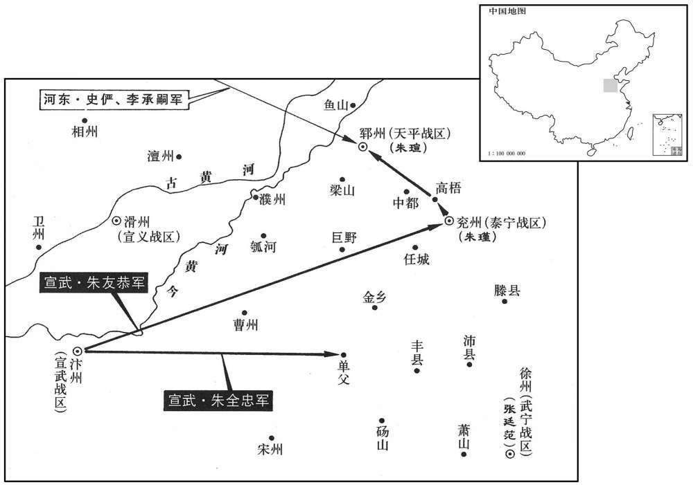
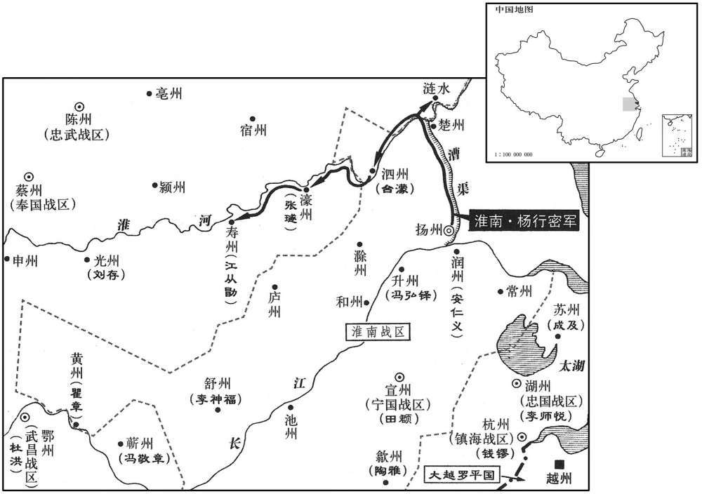
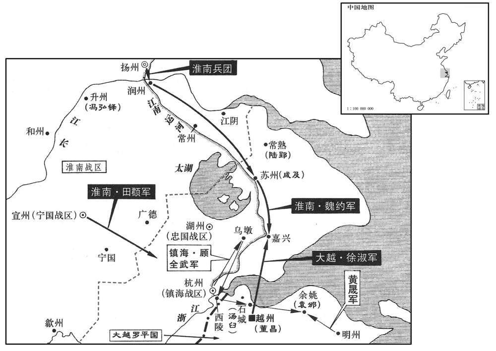
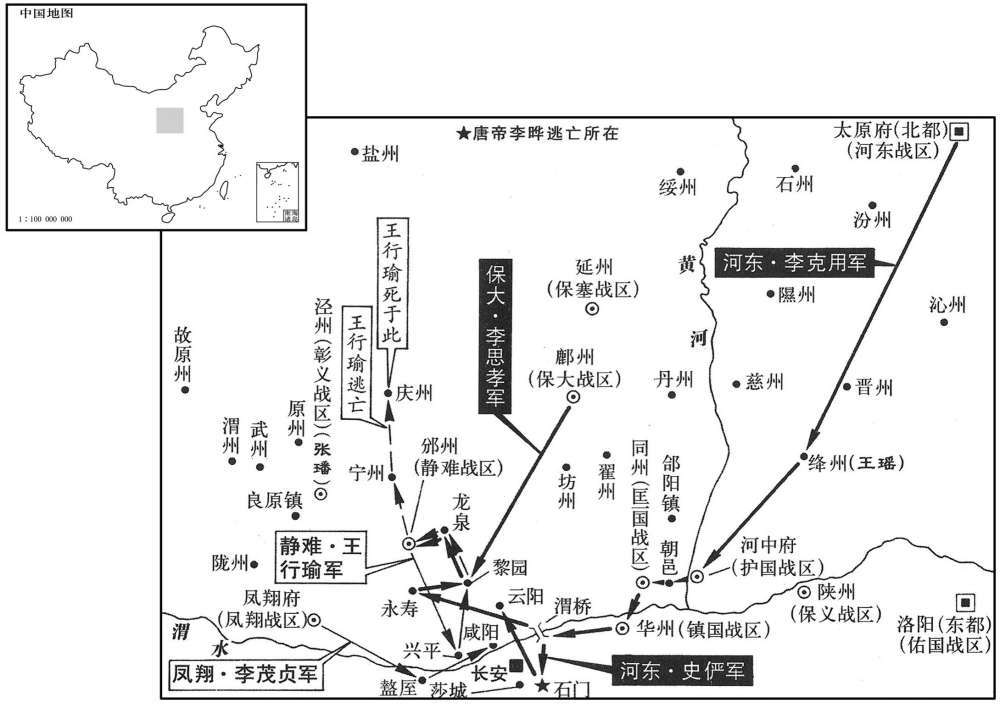
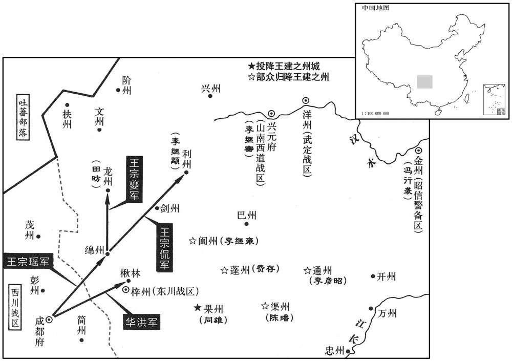
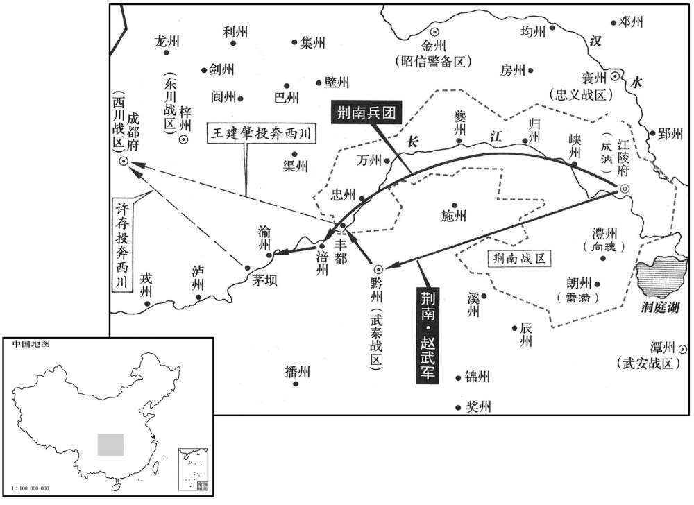
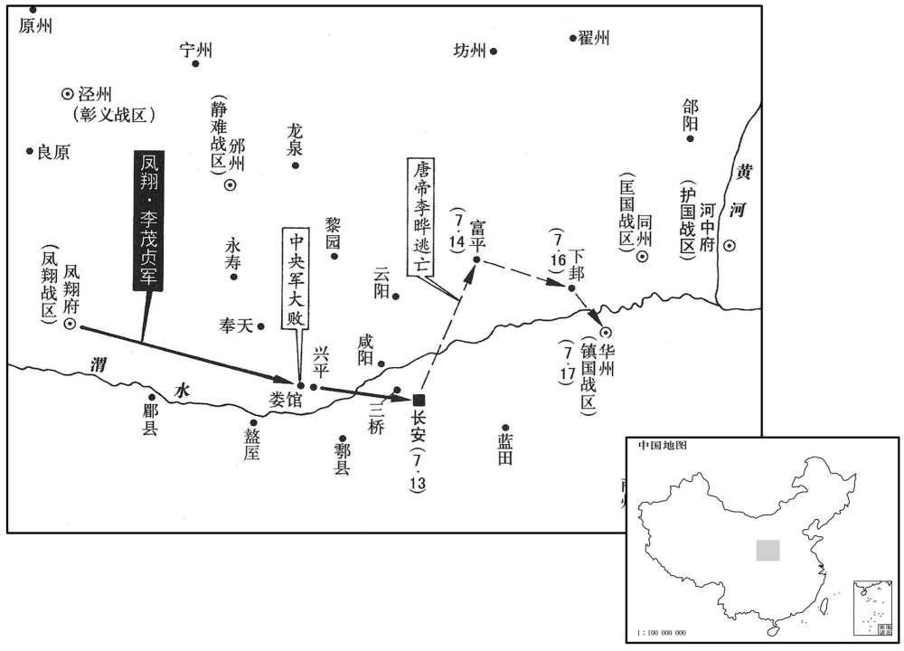

卷次与人物目录 / 卷260
资治通鉴 · 卷第二百六十【唐纪七十六】
公元895年至公元896年 · 原文、白话与胡三省注
本页按胡注本编排保存全卷内容。白话采用本站所据译本，未可靠对应的内容另列说明；事件标题用于定位，并非原书文字。
本卷共144段原文，142段有译文对应，2段缺译或待核对。
卷第二百六十【唐纪七十六】起旃蒙单阏（乙卯），尽柔兆执徐（丙辰），凡二年。〕
卷首原文与注释
昭宗圣穆景文孝皇帝上之下
公元895年 · 唐昭宗圣穆景文孝皇帝干宁二年
干宁二年〔（乙卯、八九五）〕
上传原文的注释括号有异常，字符原样保留；无法可靠划分的段落默认全文显示。
本年事件索引（现代整理）
- 幽州军民迎李克用入卢龙，李存审、刘仁恭平定属县
- 朱友恭围攻兖州，朱全忠军败朱瑄援军
- 朝廷任陆希声为户部侍郎、同平章事
- 护国节度使王重盈去世，军中推王珂留后
- 杨行密上表揭露朱全忠罪状，请求联合诸镇讨伐
- 董昌杀害反对称帝的黄碣、吴镣、张逊
- 董昌称帝，建立大越罗平国并改元顺天
- 钱镠劝董昌悔过，董昌交出吴瑶等人请罪
- 王珙、王瑶起兵攻打王珂，争夺河中节度使之位
- 昭宗任李溪为户部侍郎、同平章事
- 朱全忠驻军单父，为朱友恭围攻兖州助势
- 李克用表请刘仁恭任卢龙留后，留兵驻守幽州
- 李克用杀高思继兄弟，刘仁恭收抚其子
- 崔昭纬勾结李茂贞、王行瑜，李溪再度罢相
- 朝廷命崔胤任护国节度使、王搏任宰相
- 李克用支持王珂继任河中节度使，朝廷不许王琪取代
- 朝廷加封王镕为侍中
- 杨行密途经泗州，因刺史台蒙铺张接待而不悦
- 杨行密攻克濠州，俘获刺史张璲
- 杨行密将徐州掳来的李氏幼子李知诰送给徐温收养
- 杨行密围攻寿州
- 昭宗拟令宗室诸王巡警京畿、慰抚藩镇，因群臣反对而作罢
- 朝廷以董昌进贡勤勉为由赦免其罪，令其归田
- 朝廷罢免陆希声宰相职务
- 朱延寿攻克寿州，杨行密任其暂管州务
- 朱延寿击退朱全忠数万汴军，保住寿州
- 杨行密攻克涟水县
- 钱镠上表请求讨伐称帝的董昌
- 韦昭度以太保身份退休
- 朝廷任刘建锋为武安节度使，马殷掌军
- 杨行密劝钱镠宽宥董昌，并催促董昌向朝廷进贡
- 李克用派史俨、李承嗣率万骑驰入郓州，朱友恭退回汴州
- 昭宗削除董昌官爵，命钱镠征讨
- 王行瑜、李茂贞、韩建率兵入京，杀韦昭度、李溪等人并干预藩镇任命
- 李克用闻三镇兵犯京，立即征发北部军队准备入关
- 朝廷任钱镠为浙东招讨使，钱镠发兵攻董昌
- 朝廷先任孔纬、张浚为太子宾客，继而拜孔纬为相、张浚掌租庸
- 李克用率蕃汉大军南下，攻破绛州并诛杀王瑶
- 王行约在朝邑兵败，弃同州逃回长安
- 李继鹏、王行实争相挟持昭宗出奔，禁军交战并焚烧宫门
- 昭宗率百官百姓逃入南山躲避邠、岐军逼迫
- 李克用进入同州，昭宗移驾石门镇并遣使与其联络
- 李克用围攻华州，得知李茂贞、王行瑜迎驾后解围
- 朝廷任薛王李知柔为清海节度使、同平章事
- 李克用在渭桥进军，李茂贞斩李继鹏请罪
- 朝廷任崔胤为中书侍郎、同平章事
- 昭宗削夺王行瑜官爵，李克用受命讨伐并护送昭宗还京
- 朝廷任王珂、刘仁恭分别为护国、卢龙节度使
- 宫室焚毁，昭宗暂居尚书省
- 朝廷任李克用为行营都统
- 宰相孔纬去世
- 朱全忠在梁山击败朱瑄
- 李克用急攻梨园寨，昭宗命其与李茂贞和解
- 王建遣王宗瑶率军赴朝廷勤王
- 董昌向杨行密求救，杨行密派台蒙攻苏州并为董昌求情
- 李存贞在梨园北击败邠宁军
- 朝廷贬崔昭纬为梧州司马
- 昭宗将魏国夫人陈氏赐给李克用
- 李罕之、李存信攻克梨园等寨，王行瑜逃往邠州
- 昭宗迁入修缮后的大内
- 朱全忠、葛从周围攻兖州
- 杨行密派田頵、安仁义攻杭州救援董昌
- 义武节度使王处存去世，军中推其子王郜为留后
- 朝廷任孙偓为兵部侍郎、同平章事
- 李克用攻取龙泉寨，王行瑜逃入邠州后请降
- 齐州刺史朱琼献州归降朱全忠
- 衢州刺史陈儒去世，其弟陈岌继任
- 李克用攻入邠州，王行瑜逃亡途中被部下斩杀
- 朱全忠追击并歼灭朱瑄援军，擒获贺緕等将领
- 朱全忠追击并歼灭朱瑄援军，擒获贺緕等将领
- 王宗侃攻克利州，斩杀刺史李继颙
- 朱瑾诈降朱全忠，诱其派朱琼入兖州
- 朱瑾设伏擒杀朱琼，朱全忠撤军
- 李克用撤军至渭北
- 朝廷加封苏文建为同平章事
- 蒋勋求任邵州刺史遭拒，起兵据邵州
- 阆州、蓬州、渠州将领率部归降王建
- 李克用率军驻扎云阳
- 王建指控顾彦晖拒不勤王、掠夺军资，派华洪攻东川
- 李克用晋封晋王，朝廷并加封其将佐
- 王建攻打东川，通州刺史李彦昭率部归降
- 李克用请朝廷乘势进取凤翔，昭宗令其罢兵东归
- 葛从周诈称救兵将至，乘朱瑾出城后击败兖州军
- 朝廷加封钱镠为侍中
- 朱瑄、朱瑾屡遭围攻、民力困竭，向李克用求援
- 桂州将领家晟等人袭取桂州，家晟被陈可璠杀死
春，正月，辛西，幽州军民数万以麾盖歌鼓迎李克用入府舍；克用命李存审、刘仁恭将兵略定巡属。〔幽、涿、瀛、莫、妫、檀、蓟、顺、营、平、新、武等州，皆卢龙巡属也。〕
春季，正月，辛酉（初三），幽州的军队百姓几万人张起伞盖、敲锣打鼓、载歌载舞欢迎李克用进入卢龙节度使官署；李克用命令李存审、刘仁恭带领军队巡视安定卢龙节度使所属的各个州县。
癸未，〔【严：「未」改「亥」。】〕朱全忠遣其将朱友恭围兖州，〔朱瑾据兖州，屡为汴人所败，兵力俱困，至是受围。〕朱瑄自郓以兵粮救之，友恭设伏，败之于高梧，〔败，补迈翻。高梧，即春秋鲁国之高鱼。杜预注曰：高鱼在东郡廪丘县东南。续汉志：廪丘有郓城、高鱼城。〕尽夺其饷，擒河东将安福顺、安福庆。〔去年河东遣安福顺等救兖、郓，事见上卷。〕
癸亥（初五），朱全忠派遣属下将领朱友恭围攻朱瑾据守的兖州，朱从郓州带着军器粮食前往救援朱瑾，朱友恭设下埋伏，在高梧打败朱的人马，把朱携带的军响全部夺去，并擒获河东将领安福顺、安福庆。

己已，以给事中陆希声为户部侍郎、同平章事。希声，元方五世孙也。〔陆元方见二百五卷武合长寿二年。〕
已巳（十一日），朝廷任命给事中陆希声为户部侍郎、同平章事。陆希声是陆元方的第五代孙子。
壬申，护国节度使王重盈薨，军中请以重荣子行军司马珂知留后事。珂，重盈兄重简之子也，重荣养以为子。〔为王琪、王珂争河中张本。重，直龙翻。珂，丘何翻。〕
壬申（十四日），护国节度使王重盈死去，军中将士向朝廷请求任命他的儿子行军司马王珂主持留后事宜。王珂是王重盈的哥哥王重简的儿子，被王重荣收养为义子。
杨行密表朱全忠罪恶，请会易定、兖郓、河东兵讨之。
杨行密向朝廷进呈表章历数朱全忠的罪恶，请求会同易定、兖州、郓州、河东的军队一同讨伐朱全忠。
董昌将称帝，集将佐议之。节度副使黄碣曰：〔碣，其谒翻。〕「今唐室虽微，天人未厌。齐桓、晋文皆翼戴周室以成霸业。大王兴于畎亩，〔昌爵陇西郡王，故称之。畎，古滋翻。〕受朝廷厚恩，位至将相，富贵极矣，柰何一旦忽为族灭之计乎！碣宁死为北臣，不生为叛逆！」昌怒，以为惑众，斩之投其首于厕中，骂之曰：「奴贼负我！好圣明时三公不能待，而先求死也！」并杀其家八十口，同坎瘗之。〔瘗，于计翻。〕又问会稽令吴镣，〔会，古外翻。镣，力雕翻，又力吊翻。〕对曰：「大王不为真诸侯以传子孙，乃欲假天子以取灭亡邪！」〔「乃欲」之下有「为」字，文意方足。〕昌亦族诛之。又谓山阴令张逊曰：「汝有能政，吾深知之，俟吾为帝，命汝知御史台。」逊曰：「大王起石镜镇，〔见二百五十三卷僖宗干符五年。〕建节浙东，荣贵近二十年，〔近，其靳翻。〕何苦效李锜、刘辟之所为乎！〔李锜、刘辟以反诛，事皆见宪宗纪。〕浙东僻处海隅，〔处，昌吕翻。〕巡属虽有六州，大王若称帝，彼必不从，〔台、明、温、处、婺、衢，浙东巡属也；时豪杰并起，各自为刺史，昌羁縻而已。〕徒守空〔【章：十二行本「空」作「孤」；乙十一行本同；张校同，云无注本作「空」。】〕城，为天下笑耳！」昌又杀之，谓人曰:「无此三人者，则人莫我违矣！」
董昌将要称帝，他召集手下将领僚佐进行商议。节度副使黄碣说：“现在大唐皇室虽然衰败，但是天道民心还没有厌弃它。春秋时代的齐桓公、晋文公都辅佐尊奉周室才成就了称霸一方的大业。您爵至陇西郡王，是从田间民夫逐渐兴起的，承蒙朝廷的宽厚恩泽，官位做到镇将和宰相，荣华富贵已到了极点，为什么突然做出灭九族的打算呀！我黄碣宁可死也要做大唐的忠臣，而不为了活命去做朝廷叛逆！”董昌大为震怒，认为黄碣是在蛊惑手下，当即将他斩杀，把他的脑袋扔到厕所里面，并痛骂说：“这个奴才贼子背叛了我！我如此的圣明时代他不等着坐三公高位，而先要找死！”董昌并县把黄碣全家的八十口人全部斩杀，将他们埋葬在一个墓穴里。董昌又问会稽令吴镣，吴镣回答说：“大王您不做诸候让子孙世袭相传，而要做假天子去自取灭亡吗？”董昌听后，把吴镣的全家也杀光。董昌又对阴山令张逊说：“你有行政才能，我清楚地知道，等我称皇帝后，任命你主管御史台。”张逊回答他说：“大王您当初从石镜镇兴起，在浙东建下节度使的基业，荣华富贵快二十年了，何苦像李、刘辟那样背离朝廷最后遭受杀身大祸呢！浙东地方偏僻处在海边，管辖的虽然有台州、明州、温州、处州、婺州、衢州这六个州，但大王您若是自己称帝，他们一定不会附合，你徒然据守越州一座空城，只让天下人耻笑！”董昌又将张逊杀掉，对人们说：“没有了黄碣、吴镣、张逊这三个人，就没有再敢违背我的人了！”
二月，辛卯，昌被衮冕登子城门楼，即皇帝位。〔被，皮义翻。考异曰：吴越备史云，「癸卯，昌僭号」。按会稽录，「昌自云应免子之识，欲以二月二日僭号，取卯月卯日也」，而实录、长历皆云「二月己丑朔」，非当时历误，即今日历误。要之昌必以二月辛卯日僭号。〕悉陈瑞物于庭以示众。先是，咸通末，〔先，悉荐翻。〕吴、越间讹言山中有大鸟，四目三足，声云「罗平天册」，见者有殃，民间多画像以祀之，及昌僭号，曰：「此吾鸑鷟也。」〔鸑，五角翻。鷟，士角翻。鸑鷟，凤属。〕乃自称大越罗平国，改元顺天，〔考异曰：吴越备史曰，「癸卯，昌僭称皇帝，建元顺天，国号罗平。」年号或云天册，或云大圣，皆非也。罗隐撰吴越行营露布曰：「罗平者，启国之名；顺天者，建元之始。」又曰：「将军门称天册之楼，以会府为宣室之地。明告我其所称，曰『权即罗平国位』。昌状印文曰『顺天治国之印』。」十国纪年亦云「年号顺天」。会稽录云天册，盖误。今从备史。〕署城楼曰天册之楼，令群下谓己曰「圣人」。以前杭州刺史李邈、前婺州刺史蒋緕、两浙盐铁副使杜郢、前屯田郎�之黦�为相。又以吴瑶等皆为翰林学士、李畅之等皆为大将军。
二月，辛卯（初三），董昌身穿帝王的冠服登上越州内城，即位称帝。他把官吏百姓进献的祥瑞物品全都摆放在庭堂上向众人展示。在这之前，咸通末年，浙东一带民间谣传山中有一个大鸟，四只眼睛三条腿，叫喊“罗平天册”，见到这个在鸟的人就会有灾祸，于是民间百姓纷纷画像祭祀它，等到董昌自行称大越罗平国，改年号为顺天，给越州城楼题字为“天册之楼”，命令所有属下称他为“圣人”。董昌任命以前的杭州刺史李邈、婺州刺史蒋、两浙盐铁副使杜郢、屯田郎中李瑜为宰相。又任命吴瑶等人都做翰林学士、李畅之等人都做大将军。
昌移书钱镠，告以权即罗平国位，以镠为两浙都指挥使。镠遗昌书曰：〔遗，唯季翻。「与其闭门作天子，与九族、百姓俱陷涂炭，岂若开门作节度使，终身富贵邪！及今悛悔，〔悛，且缘翻，改也。〕尚可及也！」昌不听，镠乃将兵三万诣越州城下，至迎恩门〔迎恩门，越州城西门。〕见昌，再拜言曰：「大王位兼将相，柰何舍安就危！镠将兵此来，以俟大王改过耳。〔【辛：十二行本「耳」下有「若天子命将出师」七字；乙十一行本同；退斋校同；张校同，云无注本亦无。】〕纵大王不自惜，乡里士民何罪，随大王族灭乎！」昌惧，致犒军钱二百万，执首谋者吴瑶及巫觋数人送于镠，〔犒，苦到翻。觋，刑秋翻。〕且请待罪天子。镠引兵还，以状闻。〔闻于朝也。〕
两版字句有差异，建议核对原文。
董昌给钱送去书信，告诉他已暂且即罗平国皇帝位，任命钱为两浙都指挥使。钱写信给董昌说：“您与其关起门来称帝作天子，与家族和百姓一同遭殃，不如打开城门作节度使，终身享受荣华富贵呢！即使到现在改正错误，还来得及！”董昌不听钱的劝告，钱于是带领军队三万奔赴越州城下，钱到越州城西迎恩门与董昌相见，再次奉劝董昌说：“大王你的地位既是镇将又是宰相，为什么要舍弃安宁而自找祸患呢！钱我带领军队到这里来，就是等着大王你改过。即使大王你不顾惜自己，可里乡里的士人百姓有什么罪，要随着你被毁灭家族呢！”董昌这才惧怕起来，送给钱犒劳军队的钱财二百万，抓获首先为他谋划称帝的吴瑶以及几名男女巫士送交钱，并且请求等待皇帝治他的罪。钱带领军队返回，把这件事报知朝廷。
王重盈之子保义节度使琪、〔王重盈先镇陕虢；王重荣为其下所杀，重盈代镇河中，以其子璜继镇陕虢。陕虢号保义军。琪，居勇翻。〕晋〔【严：「晋」改「绛」。】〕州刺史瑶举兵击王珂，表言珂非王氏子。与朱全忠书，言「珂本吾家苍头，不应为嗣。」珂上表自陈，〔珂，丘何翻。上，时掌翻。〕且求援于李克用。上遣中使谕解之。
王重盈的儿子保义节度使王珂、绛州刺史王瑶发动军队攻打王珂，向朝廷上表说王珂并不是王家的儿子。又给朱全忠送去书信，说：“王珂本来是我家的奴仆，不应该做继承人。”王珂本人则上呈表章向朝廷自行陈述，并且向李克用请求救援。昭宗派遣宦官传谕，劝王珙、王瑶与王珂和解。
上重李溪文学，乙未，复以溪为户部侍郎、同平章事。〔去年命李溪为相，刘崇鲁沮之而止，事见上卷。〕
唐昭宗很器重李的文才学识，乙未（初七），再次任命李为户部侍郎、同平章事。
朱〔【章：十二行本「朱」上有「己酉」二字；乙十一行本同；孔本同；张校同；退斋校同。】〕全忠军于单父，〔单父县，时带单州。单，音善。父，音甫。〕为朱友恭声援。〔朱友恭时围朱瑾于兖州。〕
朱全忠率军在单父县驻扎，声援正在围攻兖州的朱友恭。
李克用表刘仁恭为卢龙留后，留兵戍之；壬子，还晋阳。
李克用进呈表章请朝廷任命刘仁恭为卢龙留后，留下军队驻守幽州；壬子（二十四日），李克用从幽州返回晋阳。
妫州人高思继兄弟，有武干，为燕人所服，克用皆以为都将，分掌幽州兵；部下士卒，皆山北之豪也，〔妫、檀诸州皆在幽州山北，亦谓之山后。〕仁恭惮之。久之，河东兵戍幽州者暴横，〔横，户孟翻。〕思继兄弟以法裁之，所诛杀其多。克用怒，以让仁恭，仁恭诉称高氏兄弟所为，克用俱杀之。仁恭欲收燕人心，复引其诸子置帐下，厚抚之。〔为仁恭叛克用张本。复，扶又翻；下同。〕
妫州人高思继兄弟几人，勇猛强干，为燕地一带人所折服，李克用任命他们为都将，分别常管幽州的军队；他们部下士兵，都是幽州山北等地的豪杰之士，刘仁恭惧怕他们。时间长了，河东军队驻守幽州的士卒残暴横行，高思继兄弟用法度制裁他们，诛杀的人很多。李克用很愤怒，以此责备刘仁恭，刘仁恭便向李克用诉说高思继兄弟的所做所为，李克用于是把高思继兄弟全部杀掉。刘仁恭想收买燕地人民的心，便又把高思继兄弟的几个儿子安置在身边，优厚地安抚他们。
崔昭纬与李茂贞、王行瑜深相结，得天子过失，朝廷机事，悉以告之。邠宁节度副使崔鋋，昭纬之族也，〔鋋，音蝉。〕李溪再入相，昭纬使鋋告行瑜曰：「向者尚书令之命已行矣，而韦昭度沮之，〔事见上卷景福二年。〕今又引李溪为同列，相与荧惑圣听，恐复有杜太尉之事。」〔杜让能，事亦见上卷景福二年。〕行瑜乃与贞表称溪奸邪，昭度无相业，宜罢居散秩。〔散，悉亶翻。〕上报曰：「军旅之事，朕则与藩镇图之；至于命相，当出朕怀。」行瑜等论列不已，三月，溪复罢为太子少师。〔复，扶又翻。〕
崔昭纬与李茂贞、王行瑜交结很深，得知唐昭宗的过错失误和朝廷的机密事务，他全都告诉李茂贞、王行瑜。宁节度副使崔，是崔昭纬同族人，当李再次进入朝廷做宰相时，崔昭纬让崔告诉王行瑜说：“以前皇帝任命你做尚书令的诏令已颁发了，可是韦昭度极力阻挠，现在韦昭度又引荐李同为宰相，相互勾结迷惑皇帝视听，恐怕又要有太尉杜让能那样的事了。”王行瑜于是与李茂贞上表朝廷声称李奸诈邪恶，韦昭度没有做宰相的才具，应当罢免他们的宰相做闲官。昭宗回答他们说：“军营中的战事，朕即与各藩镇图谋商议；至于任命宰相，则应当出自联的意向。”王行瑜等论争不休，三月，李又被贬为太子少师。
王琪、王瑶请朝廷命河中帅，〔帅，所类翻；下同。〕诏以中书侍郎、同平章事崔胤同平章事，充护国节度使；以户部侍郎、判户部王搏为中书侍郎、同平章事。
王珙、王瑶请求朝廷任命河中节度使，唐昭宗诏令任命中书侍郎、同平章事崔胤为同平章事，充任护国节度使；任命户部侍郎、判户部王抟为中书侍郎、同平章事。
王珂，李克用之伲也。克用表重荣有功于国，〔言破黄巢、黜襄王，王重荣皆有功也。〕请赐其子珂节钺。王琪厚结王行瑜、李茂贞、韩建三师，更上表称珂非王氏子，〔更，工衡翻，迭也。〕请以珂为陕州、琪为河中。上谕以先已允克用之奏，不许。〔允，从也。为三帅称兵入京城，克用诛王瑶讨三帅张本。，陕，失冉翻。〕
王珂是李克用的女婿。李克用向朝廷上表说王重荣对国家有功，请求赐给他的儿子王珂节度使旌旗节钺。王珙进一步与王行瑜、李茂贞、韩建三位节度使交结，交替着向朝廷进呈表章声称王珂并不是王重荣的儿子，请求任命王珂为陕州刺史，王珙为河中节度使。唐昭宗颁谕说先前已经许可了李克用的奏请，而没有准行王行瑜等人的请求。
加王镕兼侍中。
本段缺少可靠对应白话，原文完整保留；未使用生成译文。
杨行密浮淮至泗州，防御使台蒙盛饰供帐，〔姓苑：台姓，台骀之后，后汉有高士台佟，晋有术士台彦，前赵有特进台彦皋。供，居用翻。〕行密不悦。既行，蒙于卧内得补绽衣，驰使归之。〔「绽」，当作「穂」，丈苋翻。绽，亦补也。使，疏吏翻。〕行密笑曰：「吾少贫贱，不敢忘本。」〔少，诗照翻。〕蒙甚惭。
杨行密沿淮河到达泗州，泗州防御使台为杨行密大肆装饰营帐，杨行密对此并不高兴。杨行密启程离开泗州后，台在杨行密的卧室内发现一件补钉衣服，台骑马追赶把那件衣服送还杨行密。杨行密笑着说：“我小时候家中贫寒，出身低贱，现在我也不敢忘本。”台听后十分惭愧。
行密攻濠州，拔之，执刺史张璲。〔璲附朱全忠见上卷景福元年。〕
杨行密攻打濠州，予以攻克，抓获濠州刺史张。
行密军士掠得徐州人李氏之子，生八年矣，行密养以为子，〔南唐世家曰：李升，徐州人，李荣之子。荣遇乱不知所终。升少孤，流寓濠、泗间，杨行密攻濠州得之，养为子。〕行密长子渥憎之；行密谓其将徐温曰：「此儿质状性识，颇异于人，吾度渥必不能容，〔度，徒洛翻。〕今赐汝为子。」温名之曰知诰。知诰事温，勤孝过于诸子。尝得罪于温，温笞而逐之；及归，知诰迎拜于门。温问：「何故犹在此﹖」知诰泣对曰：「人子舍父母将何之！父怒而归母，人情之常也。」温以是益爱之，使掌家事，家人无违言。及长，喜书善射，〔长，知两翻。喜，许既翻。〕识度英伟。行密常谓温曰：「知诰俊杰，诸将子皆不及也。」〔徐知诰事始此，后复姓李，名升。〕
杨行密的军中士兵抢掠到一个徐州姓李人家的孩子，已经八岁了，杨行密把他收为养子，杨行密的长子杨渥憎恨这个孩子；杨行密对他的属将徐温说：“这个孩子质朴聪颖，和别人很不一样，我揣测杨渥一定容不下他，现在赐给你为养子。”徐温给这个孩子起名叫徐知诰。徐知诰侍奉徐温，勤谨孝敬超过徐温的其他几个儿子。有一次，徐知诰得罪了徐温，徐温鞭打他并赶他走；等到徐温回到家里，徐知诰跪在门口迎接。徐温问他：“为什么还在这里？”徐知诰流着眼泪回答说：“做儿子的离开了父母还能到哪里去呢！父亲盛怒时候就先回到母亲的身边，这是人之常情。”徐温因此更加疼爱徐知诰，让他掌管家中事务，家里的人没有不听他话的。等到徐知诰长大了，喜好读书善于射箭，见识不凡，器度英伟。杨行密经常对徐温说：“徐知诰英俊杰出，各位将领的儿子都比不上他。”
丁亥，行密围寿州。
丁亥（三十日），杨行密围攻寿州。
上以郊畿多盗，至有踰垣入宫或侵犯陵寝者，欲令宗室诸王将兵巡警，又欲使之四方抚慰藩镇。南北司用事之臣恐其不利于己，交章论谏。上不得已，夏，四月，下诏悉罢之。
昭宗因为京师长安的郊区盗贼很多，甚至有越过城墙进入皇宫或挖掘皇陵的，便想命令宗室各王带领军队巡查警防，又想派他们到各地安抚慰问藩镇。朝中大臣及宦官中掌权的人担心这样对自己不利，交相进呈奏章进行劝阻，昭宗不得已，于夏季四月份，颁下诏令全部停止。
朝廷以董昌有贡输之勤，〔输，舂遇翻。〕今日所为，类得心疾，诏释其罪，纵归田里。
朝廷因为董昌有进贡纳赋殷勤的功劳，这次称帝的叛逆举动，好象他得了疯病，唐昭宗便颁诏赦免董昌的罪过，放他回到故里。
户部侍郎、同平章事陆希声罢为太子少师。
昭宗把户部侍郎、同平章事陆希声贬为太子少师。
杨行密围寿州，不克，将还；庚寅，其将朱延寿请试往更攻，一鼓拔之，〔以行密将还而懈于守备，故一鼓而拔。〕执刺史江从勖。〔高彦温举寿州附朱全忠，全忠以江从勖为刺史，杨行密执之，遂有濠、寿二州。〕行密以延寿权知寿州团练使。
杨行密围攻寿州，未能攻克，想要返回；庚寅（初三），杨行密的手下将领朱延寿请求再次前往攻打试试，结果一鼓作气攻克，抓获寿州刺史江从勖。杨行密任命朱延寿暂任寿州团练使。
未几，〔几，居岂翻。〕汴兵数万攻寿州，州中兵少，吏民忷惧。〔忷，许勇翻。〕延寿制，军中每旗二十五骑。命黑云队长李厚将十旗击汴兵，不胜；延寿将斩之，〔长，知两翻。〕厚称众寡不敌，愿益兵更往，不胜则死。都押牙汝阳柴再用亦为之请，〔路振九国志：柴再用始名存，事孙儒，与一小校结死友。有告小校反，儒斩之。执存至，诘何故反，不对。又问，对曰：「与彼结死友，彼反则某反，公诛之，复何问焉！」儒奇之曰：「汝果不反，吾再用汝。」因改名。为，于伪翻。〕乃益以五旗。厚殊死战，再用助之，延寿悉众乘之，汴兵败走。厚，蔡州人也。〔李厚者，孙儒之遗兵。〕
不久，朱全忠的汴州军队几万人攻打寿州，州内兵力较少，官吏百姓人心惶惶。朱延寿便规定，军队每面旗帜下二十五名骑兵。命令黑云队长李厚带领十旗袭击汴州军队，没有取胜。朱延寿要将李厚斩杀，李厚说敌众我寡难以抵敌，希望给他增添军队再次前往迎战，如果还不能获胜甘愿一死。都押牙将汝阳人柴再用也为李厚请求，于是朱延寿又给李厚增拨了五旗兵力。李厚拼死奋战，柴再用从中协助，朱延寿也率全部人马后援，汴州军队终于败撤走。李厚是蔡州人。
行密又遣兵袭涟水，拔之。〔史言杨行密壤地浸广。泗州涟水县，杜佑曰：汉仇犹县。宋白曰：按厹犹城，今宿豫县也，魏曰海安县，晋为宿豫之境，宋置东海郡，后魏改海安郡，隋废郡，置涟水县。〕
杨行密又派遣军队袭击泗州涟水县，予以攻克。

钱镠表董昌僭逆，不可赦，请以本道兵讨之。〔钱镠本有并董昌之心，因其僭号，仗大顺而请讨之。〕
钱向昭宗上表说董昌犯有自行称帝叛逆大罪，不应赦免，请求率领本道军队讨伐董昌。
太傅、门下侍郎、同平章事韦昭度以太保致仕。
昭宗诏令太傅、门下侍郎、同平章事韦昭度以太保官衔退休。
戊戌，以刘建锋为武安节度使。建锋以马殷为内外马步军都指挥使。〔为马殷代建锋张本。〕
戊戌（十一日），朝廷任命刘建锋为武安节度使。刘建锋委任马殷为内外马步军都指挥使。
杨行密遣使诣钱镠，言董昌已改过，宜释之；〔杨行密欲存董昌以制钱镠之后，使不得与己争衡耳。〕亦遣诣昌，使趣朝贡。〔趣，读曰促。朝，直遥翻；下同。〕
杨行密派遣使者前往钱那里，说董昌已经知罪悔过，应当赦免他，也派使者到董昌那里，让他立即向朝廷进贡纳赋。
河东遣其将史俨、李承嗣以万骑驰入于郓，〔李克用遣史俨等再往救兖、郓，则不得还矣。劳师远图，自古忌之。〕朱友恭退归于汴。
河东节度使李克用派遣属下将领史俨、李承嗣带领一万骑兵疾驰进入郓州，朱友恭退走返回汴州。
五月，诏削董昌官爵，委钱镠讨之。
五月，唐昭宗诏令革除董昌的官职爵位，委派钱征讨董昌。
初，王行瑜求尚书令不获，〔见上卷景福二年。〕由是怨朝廷。畿内有八镇兵，隶左右军。〔左、右神策军也。〕合阳镇近华州，韩建求之；〔合阳，汉县，唐属同州。九域志：县在州东一百二十里。合，音合。近，其靳翻；下同。〕良原镇近邠州，王行瑜求之。〔良原县，属冱州。〕宦官曰：「此天子禁军，何可得也！」王珂、王琪争河中，行瑜、建及李茂贞皆为琪请，不能得，耻之。琪使人语三帅曰：〔为，于伪翻。语，牛倨翻。帅，所类翻。〕「珂不受代而与河东婚姻，必为诸公不利，请讨之。」行瑜使其弟匡国节度使行约攻河中，〔时以同州为匡国军。九域志：同州东至河中七十五里。〕珂求救于李克用。行瑜乃与茂贞、建反将精兵数千入朝，甲子，至京师，坊市民皆窜匿。上御安福门以待之，三帅盛陈甲兵，拜伏舞蹈于门下。上临轩，亲诘之曰：〔宇末曰轩。诘，去吉翻。〕「卿等不奏请俟报，辄称兵入京城，其志欲何为乎﹖若不能事朕，今日请避贤路！」行瑜、茂贞流汗不能言，独韩建粗述入朝之由。〔粗，坐五翻。〕上与三帅宴，三帅奏称：「南、北司互有朋党，堕紊朝政。〔堕，读曰隳。紊，音问。〕韦昭度讨西川失策，〔讨西川事见二百五十七卷、二百五十八卷。〕李溪作相，不合众心，请诛之。」上未之许。是日，行瑜等杀昭度、溪于都亭驿，〔都亭驿，在朱雀门外西街，含光门北来第二坊。〕又杀枢密使康尚弼及宦官数人。又言：「王珂、王琪嫡庶不分，请除王琪河中，徙王行约于陕，王珂于同州。」上皆许之。始，三帅谋废上，立吉王保；至是，闻李克用已起兵于河东，行瑜、茂贞各留兵二千人宿卫京师，与建皆辞还镇。贬户部尚书杨堪为雅州刺史。堪，虞卿之子，〔杨虞卿见文宗纪。〕昭度之舅也。
当初，王行瑜谋求尚书令官职未能获得，因此怨恨朝廷。京师长安所辖地区有八镇军队，隶属左、右神策军。阳镇靠近华州，韩建请求兼管；良远镇接近州，王行瑜希望由他统领。宫内宦宫说：“这都是皇帝的禁卫军，怎么能让他们得到！”王珂、王珙争夺河中节度使这一官职，王行瑜、韩建以及李茂贞都为王珙请求，结果王珙却未能得到，这几个人都感到很耻辱。王珙派人对王行瑜、韩建、李项贞三位节度使说：“王珂在河中不接受我的代替而与河东节度使李克用结成姻亲，对你们各位一定不利，请求你们讨伐王珂。”王行瑜便派他的弟弟匡国节度使王行约攻打河中，王珂向李克用请求救援。王行瑜于是与李茂贞、朝建各带领精兵几千人奔赴朝廷。甲子（初八），王行瑜等人率军到达京师，长安街市居民都到处逃窜躲藏。唐昭宗来到安福门等待他们，三位节度使把披甲军队大规模排列开来，在安福门下行大跪大拜礼仪。昭宗走到门楼前，亲自责问他们说：“你们不上表奏请等待朝廷回话，就发动军队进入京城，你们的意图究竟要干什么？如果你们不能侍奉朕，今天就请你们退离官位让给贤明的人！”王行瑜、李茂贞听后浑身冒冷汗而不能说一句话，唯有韩建粗略地陈述了前来京师的原因。昭宗与三位节度使宴会，三位节度使向皇帝奏道：“朝中大臣和宫内宦官互相结党为奸，败坏扰乱朝廷大政。韦昭度讨伐西川决策失误，李充任宰相，不合群臣的心愿，请将李诛杀。”昭宗没有准许他们的奏请。这一天，王行瑜等在朱雀门外都亭驿将韦昭度、李杀死，又杀掉枢密使康尚弼及宦官好几人。王行瑜等又向唐昭宗进言说：“王珂、王珙的作用是不分子嫡子和庶子的尊卑，现在请求任命王珙为河中节度使，把王行约调往陕州，王珂调到同州。”昭宗都予以同意。开始，王行瑜等三位节度使谋划废黜唐昭宗，拥立吉王李保称帝。这时，听说李克用已在河东起兵，王行瑜、李茂贞便分别留下军队二千人守护京师，与韩建一同辞别返回镇所。昭宗又诏令把户部尚书杨堪贬职为雅州刺史。杨堪是杨虞卿的儿子，韦昭度的舅舅。
初，崔胤除河中节度使，河东进奏官薛志勤扬言曰：「崔公虽重德，以之代王珂，不若光德刘公于我公厚也。」光德刘公者，太常卿刘崇望也。〔光德，里名，在长安城中。唐末，大臣有时望者，时人率以其所居里称之。光德坊，朱雀街西第三街北来第六坊，京兆府在焉。〕及三帅入朝，闻志勤之言，贬崇望昭州司马。李克用闻三镇兵犯阙，即日遣使十三辈发北部兵，〔北部兵，代北诸蕃落兵也。〕期以来月渡汀入关。
当初，崔胤授职河中节度使，河东节度使司的进奏官薛志勤便扬言说：“崔胤虽然是注重德行的人，但是让他取代王珂，不如长安城内光德坊的刘公对我主公李克用感情好。”光德坊刘公，就是太常卿刘崇望。等到王行瑜等三位节度使进入京师，知道了薛志勤说的话，便把刘崇望贬职为昭州司马。李克用听说三位节度使率领军队侵犯京师，当天就派遣使者十三起去征发北部蕃族部落军队，约定下个月渡过黄河进入潼关。
六月，庚寅，以钱镠为浙东招讨使；镠复发兵击董昌。〔复，扶又翻。〕
六月，庚寅(初四），朝廷任命钱为浙东招讨使，钱于是再次征发军队攻打董昌。
辛卯，以前均州刺史孔纬、绣州司户张浚并为太子宾客。壬辰，以纬为吏部尚书，复其阶爵，癸已，拜司空，兼门下侍郎、同平章事。以张浚为兵部尚书、诸道租庸使。〔孔纬、张浚贬见二百五十八卷大顺元年。今欲复用之。〕时纬居华州，浚居长水，上以崔昭纬等外交藩镇，朋党相倾，思得骨鲠之士，故骤用纬、浚。纬以有疾，扶舆至京师，见上，涕泣固辞；上不许。
辛卯（初五），朝廷任命以前的均州刺史孔纬、绣州司户张浚一同为太子宾客。壬辰（初六），朝廷任命孔纬为吏部尚书，恢复他的官级爵位；癸巳（初七），又授职孔纬司空，兼任门下侍郎、同平章事。朝廷还任命张浚为兵部尚书、诸道租庸使。当时孔纬居住在华州，张浚居住在长水，昭宗因为崔昭纬等在外交结藩镇，结党营私，相互倾轧，而想起用刚直人士，因此突然任用孔纬、张浚。孔纬因为身体有病，抱病乘车来到京师，他见到昭宗，流着泪坚决推辞；昭宗不准。
李克用大举蕃、汉兵南下，上表称王行瑜、李茂贞、韩建称兵犯阙，贼害大臣，请讨之，〔李克用实党王珂，声三帅之罪而表请致讨。〕又移檄三镇，行瑜等大惧。克用军至绛州，刺史王瑶闭城拒之；克用进攻，旬日，拔之，斩瑶于军门，杀城中违拒者千余人。秋，七月，丙辰朔，克用至汀中，王珂迎谒于路。
李克用大规模地发动蕃族和汉人的军队向南开进，他向唐昭宗上表声称王行瑜、李茂贞、韩建派兵进犯京师，残害朝中大臣，请求讨伐他们。李克用又向王行瑜、李茂贞、韩建三位节度使发去征讨檄文，王行瑜等大为恐惧。李克用的军队到达绛州，绛州刺史王瑶关闭城门抵抗；李克用发动进攻，十天，就将绛州攻克，在军营的大门将王瑶斩杀，并杀掉城内进行抵抗的一千余人。秋季，七月，丙辰朔（初一），李克用到达河中，王珂在路上迎接拜见他。
匡国节度使王行约败于朝邑，〔朝，直遥翻。〕戊午，行约弃同州走，己未，至京师。行约弟行实时为左军指挥使，〔神策左军非此。〕帅众与行约大掠西市。〔朱雀街西，谓之西市。〕行实奏称同华已没，沙陀将至，请车驾幸邠州。庚申，枢密使骆全瓘奏请车驾幸凤翔。上曰：「朕得克用表，尚驻军河中。就使沙陀至此，朕自有以枝梧，卿等但各抚本军，勿令摇动。」
匡国节度使王行约在朝邑打了败仗，戊午（初三），王行约放弃同州逃路，己未（初四），到达京师长安。王行约的弟弟王行实当时充任京师左军指挥使，他率领手下人马与王行约一起在长安西市大肆抢掠。王行实向唐昭宗上表奏称，同州、华州已经沦陷，李克用的沙陀人马就要到了，请皇帝的车驾到州去避难。庚申（初五），枢密使骆全上表奏请皇帝出巡凤翔。唐昭宗说：“朕收到了李克用的表章，他尚且率军在河中驻扎。即使是李克用的沙陀人马到达这里，朕自然有办法应付他，你们只要各自安抚好自己的军队。不要让他们动摇骚动。”
右军指挥使李继鹏，茂贞假子也，〔程大昌雍录曰：北军左、右两军，皆在苑内。左三军在内东苑之东，大明宫苑东也。右三军在九仙门之西，九仙在内东苑之西北角。左三军，左神策、左龙武、左羽林军也。右三军，右神策、右龙武、右羽林军也。余按雍录所云左、右六军，代、德以后宿徫者也。僖宗广明幸蜀，此六军溃散，田令孜于成都募新军五十二都，分属左、右神策军；自时厥后，凡所谓左、右军者，皆此军也，分营于京城内外，又不专在苑中。若此时王行实、李继鹏为左、右军指挥使，疑是邠、岐二帅所留兵以宿卫者自分为左、右也。〕本姓名阎珪，与骆全瓘諆劫上幸凤翔；中尉刘景宣与王行实知之，欲劫上幸邠州；孔纬面折景宣，以为不可轻离宫阙。〔折，之舌翻。离，力智翻。〕向晚，继鹏连奏请车驾出幸，于是王行约引左军攻右军，鼓噪震地。上闻乱，登承天楼，欲谕止之，捧日都头李筠将本军，于楼前侍卫。李继鹏以凤翔兵攻筠，〔王行约以李继鹏欲先劫车驾幸岐，故攻右军。李继鹏当与行约战，而乃攻李筠者，以筠卫上，不得而劫幸也。〕矢拂御衣，着于楼桷，〔着，直略翻。桷，榱也。椽方曰桷。〕左右扶上下柚；继鹏复纵火焚宫门，烟炎蔽天。时有盐州六都兵屯京师，〔炎，读与焰同。盐州六都兵，孙德昭等所领兵也。〕素为两军所惮，上急召令入卫；既至，两军退走，各归邠州及凤翔。城中大乱，互相剽掠，〔剽，匹妙翻。〕上与诸王及亲近幸李筠营，护跸都头李居实帅众继至。〔护跸都亦神策五十四都之一，或曰即扈跸都。帅，读曰率。〕
右军指挥使李继鹏，是李茂贞的养子，原本叫阎，他与骆全策划劫持唐昭宗前往凤翔。中尉刘景宣与王行实知道了，则想劫持昭宗前赴州。孔纬当面驳斥刘景宣，认为皇帝不能轻易离开长安宫殿。近傍晚时，李继鹏接连上奏请昭宗出走凤翔，王行约见李继鹏要抢先劫走昭宗，便带领他的左军攻打李继鹏的右军，锣鼓喧闹声惊天动地。昭宗听到外面混乱，便登上承天楼，想谕令制止他们，捧日都头李筠带领自己的军队，在承天楼前护卫昭宗。李继鹏指挥凤翔军队攻打李筠，飞箭掠过昭宗的衣服，落在承天楼椽木上，身边的侍卫搀扶着昭宗下楼；李继鹏又放火焚烧宫门，浓烟烈炎遮盖了天空。当时有盐州六都军队驻扎京师，平时左、右两军都很惧怕他们，昭宗便紧急召令这支军队入宫护卫；盐州六都军队到达后，左、右两军队都撤退离去，分别返回州和凤翔。长安城内大为混乱，到处抢劫掠夺，昭宗与各王以及亲近人员到李筠的军营躲避，神策军护跸都头李居实率领人马随后也赶到。
或传王行瑜、李茂贞欲自来迎车驾，上惧为所迫，辛酉，以筠、居实两都兵自卫，出启夏门，〔启夏门，长安城南面东来第一门。〕趣南山，宿莎城镇。〔莎城镇，在长安城南，近郊之地也。趣，七喻翻。〕士民追从车驾者数十万人，比至谷口，暍死者三之一，〔谷口，南山谷口也。暍，于歇翻。暍死者，中热而死。比，必寐翻。〕夜，复为盗所掠，哭声震山谷。时百官多扈从不及，〔从，才用翻。〕户部尚书、判度支及盐铁转运使薛王知柔独先至，〔知柔，薛王业之曾孙。〕上命权知中书事及置顿使。
有人传说王行瑜、李茂贞要亲自来长安迎接皇帝，昭宗担心被他们逼迫，辛酉（初六），命令李筠、李居实的两都军队进行护卫，出长安城南面的启夏门，急速奔往南山，在莎城镇过夜。追随昭宗车驾的人民有几十万，等到抵达南山的谷口时，中暑而死的人竟有三分之一，夜里，流亡的百姓又遭受盗贼的抢掠，哭喊的声音震动山谷。当时朝廷百官大多没有来得及跟随上昭宗，唯有户部尚书、判度支及盐铁转运使薛王李知柔首先赶到，昭宗便任命他暂时掌管中书省事务及兼任置顿使。
壬戌，李克用入同州，崔昭纬、徐彦若、王抟至莎城。甲子，上徙幸石门镇，〔路振九国志：昭宗出启夏门，驻华严寺，晡晚，出幸南山之莎城，驻于石门山之佛寺。与此稍异。〕命薛王知柔与知枢密院刘光裕还京城，制置守卫宫禁。丙寅，李克用遣节度判官王緕奉表问起居。丁卯，上遣内侍郗廷昱〔新书百官志：内侍在内侍监之下，内常侍之上，员四人，从四品上。郗，丑之翻。〕赍诏诣李克用军，令与王珂各发万骑同赴新平。〔赴新平以讨王行瑜。邠州新平郡。〕又诏彰义节度使张鐇以泾原兵控扼凤翔。
壬戌（初七），李克用进入同州。崔昭纬、徐彦若、王抟到达莎城。甲子（初九），昭宗迁移到石门镇，诏令薛王李知柔与主管枢密院的刘光裕返回京城，安置守卫皇宫。丙寅（十一日），李克用派遣节度判官王敬奉表文问候昭宗的起居情况。丁卯（十二日），昭宗派遣内侍郗廷昱带着诏令前赴李克用的军营，命令李克用与王珂分别派发一万骑兵，一同赶往州新平郡讨伐王行瑜，又诏令彰义节度使张带领泾原军队控制凤翔的李茂贞。
李克用遣兵攻华华；韩建登城呼曰：〔呼，火故翻。〕「仆于李公未尝失礼，何为见攻﹖」克用使谓之曰：「公为人臣，逼逐天子，公为有礼，孰为无礼者乎！」会郗廷昱至，言李茂贞将兵三万至盩厔，王行瑜将兵至兴，平皆欲迎车驾，克用乃释华州之围，移兵营渭桥。〔考异曰：唐太祖纪年录：「王师攻华州，俄而郗廷昱至，且言茂贞领兵三万至兴平，欲往石门迎驾，乃解华围，进营渭桥。」按实录，八月延王戒丕至河中，克用已发前锋至渭北。己丑克用进营渭桥。又纪年录载诏曰：「省表，已部领大军，前月二十七日离河中。」盖克用不亲围华州，但遣别将将兵往，及闻邠、岐谋迎驾，乃遣华兵诣渭桥，即所谓前锋者也。克用既以七月二十七日离河中，则戒丕至彼必在其前，实录云八月至河中，误也。今从纪年录。〕
李克用派遣军队进攻华州；韩建登上华州城楼呼喊着说：“我对李公不曾失礼，为什么要攻打我？”李克用派人对他说：“你是大唐的臣子，却逼迫驱赶皇帝，你这样如果还算有礼，那么天下还有谁是无礼呢？”恰巧这时郗廷昱赶到，他对李克用说，李茂贞带领军队三万已到，王行瑜率领军队到达兴平，都想迎接唐昭宗的车驾，李克用于是解除对华州的围攻，把军队开赴渭桥安营扎寨。
以薛王知柔为清海节度使、〔是年，赐岭南节度使军额曰清海。〕同平章事，仍权知京兆尹、判度支，充盐铁转运使，俟反正日赴镇。
昭宗任命薛王李知柔为清海节度使、同平章事，仍然暂任京兆尹、判度支，并充任盐铁转运使，让他等待平乱反正后再前赴岭南镇所。
上在南山旬余，士民从车驾避乱者日相惊曰：「邠、岐兵至矣！」上遣延王戒丕诣河中，趣李克用令进兵。〔张承业，内供奉官也。〕承业，同州人，屡奉使于克用，因留监其军。〔为张承业尽心于李克用父子张本。〕己丑，克用进军渭桥，遣其将李存贞为前锋；辛卯，拔永寿，又遣史俨将三千骑诣石门侍卫。癸已，遣李存信、李存审会保大节度使李思孝攻王行瑜梨园寨，〔梨园寨，在京兆云阳县。九域志：云阳在华州西北九十里。考异曰：庄宗列传曰：「三镇乱，长安李存信从太祖入关，以前军先自夏阳阳渡河，攻同华属邑，下之。时太祖在渭北，伶官群小或劝太祖入朝自握兵柄。太祖亦以全忠图己，朝廷不能断，心微有望，月余不进军。存信与盖寓乘间密启曰：『大王家世效忠，此行讨逆，上为邠、凤不臣，但令臣节为天下所知，即三贼不足平也。而悠悠之徒，不达大体，或以佛询之画苟悦台情，虽俳优庂言，不宜纵其如此。京师咫尺，天听非遥，实无益于英德也。今三凶正蹙，须速图之，事留变生，无宜犹豫。』太祖曰：『公言是也。』即日出师，下梨园砦。」按克用谋大事，固非伶官所豫。又实录，己丑克用进营渭桥，癸已克梨园，中间四日耳，无月余不进事。且既云群小劝入朝，即当诣行在，不当留渭北。此特李存信之人欲归功于存信耳。今不取。〕擒其将王令陶等，献于行在。思孝本姓拓跋，思恭之弟也。李茂贞惧，斩李继鹏，传首行在，〔李茂贞委劫乘舆之罪于继鹏。〕上表请罪，且遣使求和于克用。上复遣延王戒丕、丹王允谕克用，〔丹王逾，代宗子，允其后也。复，扶又翻。〕令且赦茂贞，并力讨行瑜，俟其殄平，当更与卿议之。且命二王拜克用为兄。
昭宗在南山已有十几天了，跟随唐昭宗车驾的士人百姓每天都惊慌失措地相互惊叫：“州、岐州的军队到了！”昭宗派遣延王李戒丕前赴河中，催促李克用下令开进军队。壬午（二十七日），李克用的军队从河中出发。唐昭宗派遣供奉官张承业前往李克用的军营。张承业是同州人，多次奉唐昭宗的谕令出使李克用，昭宗趁便把他留在李克用的军营监视。己丑（八月初五），李克用命令军队向渭桥开进，派遣属下将领李存贞为前锋；辛卯（初七），李克用攻克永寿，又派遣史俨带领三千骑兵前赴石门护卫唐昭宗。癸巳（初九），李克用派遣李存信、李存审会同保大节度使李思孝攻打在梨园寨的王行瑜，擒获王行瑜的将领王令陶等人，送往南山昭宗那里。李思孝本姓拓跋，是拓跋思恭的弟弟。李茂贞兵败很是恐惧，他斩杀李继鹏，把头颅传送到石门镇昭宗的住地，向朝廷进呈表章请求治他的罪，并且派出使者向李克用求和。昭宗再次派遣延王李戒丕、丹王李允传谕李克用，命令暂且赦免李茂贞，联合军队全力讨伐王行瑜，等到把王行瑜消灭了，朝廷会再与李克用商议处置李茂贞。昭宗并且命令延王李戒丕、丹王李允拜李克用为兄长。
以前河中节度使崔胤为中书侍郎、同平章事。
朝廷任命前河中节度使崔胤为中书侍郎、同平章事。
戊戌，削夺王行瑜官爵。癸卯，以李克用为邠宁四面行营都招讨使，保大节度使李思孝为北面招讨使，定难节度使李思谏为东面招讨使，〔，难乃旦翻。〕彰义节度使张鐇为西面招讨使。〔命李克用自南临讨之。〕克用遣其子存勖诣行在，〔李存勖始此。考异曰：实录作「存贞」。据后唐实录、薛居正五代史，庄宗未尝名存贞。实录盖误。〕年十一，上奇其状貌，抚之曰：「儿方为国之栋梁，他日宜尽忠于吾家。」克用表请上还京；上许之。令克用遣骑三千驻三桥为备御。辛亥，车驾还京师。
戊戌（十四日），朝廷革除王行瑜的官职爵位。癸卯（十九日），朝廷任命李克用为宁四面行营都招讨使，保大节度使李思孝为北面招讨使，定难节度使李思谏为东面招讨使，彰义节度使张为四面招讨使。李克用派遣他的儿子李存勖到昭宗住地，李存勖当时才十一岁，昭宗对他的外貌就称奇不已，抚摸着他说：“你是国家的栋梁之才，将来要对天子我家尽忠效力。”李克用上表请求昭宗返回京师长安，昭宗同意。命令李克用派遣骑兵三千驻扎三桥作为防备。辛亥（二十七日），昭宗的车驾返回京师。
壬子，司空兼门下侍郎、同平章事崔昭纬罢为右仆射。
壬子（二十八日），朝廷将司空兼门下侍郎、同平章事崔昭纬罢职降为右仆射。
以护国留后王珂、卢龙留后刘仁恭各为本镇节度使。〔李克用之志也。〕
朝廷任命护国留后王珂、卢龙留后刘仁恭分别充任本镇节度使。
时宫室焚毁，未暇完葺，上寓居尚书省，〔程大昌曰：尚书省，在朱雀门正街之东，自占一坊，六部附丽其旁。〕百官往往无袍笏仆马。
当时宫殿被焚烧毁坏，没有来得及修建整理，昭宗暂时住在尚书省，朝中百官常常没有长袍期笏和仆役马匹。
以李克用为行营都统。
朝廷任命李克用为行营都统。
九月，癸亥，司空兼门下侍郎、同平章事孔纬薨。
九月，癸亥（初十），司空兼门下侍郎、同平章事孔纬去世。
辛未，朱全忠自将击朱瑄，战于梁山；〔新志：郓州寿张县有刀梁山。水经注，梁山在寿张县，济水径其东。〕瑄败走还郓。
辛未（十八日），朱全忠亲自率领军队攻打朱，在寿张县的梁山展开激放，朱战败逃走返回郓州。
李克用急攻梨园，王行瑜求救于李茂贞，茂贞遣兵万人屯龙泉镇，〔九域志：邠州三水县有龙泉镇，在州东北。〕自将兵三万屯咸阳之旁。克用请诏茂贞归镇，仍削夺其官爵，欲分兵讨之。上以茂贞自诛继鹏，前已赦宥，不可复削夺诛讨，〔复，扶又翻。〕但诏归镇，仍令克用与之和解。以昭义节度使李罕之检校侍中，充邠宁四面行营副都统。史俨败邠宁兵于云阳，〔败，补迈翻；下同。〕擒云阳镇使王令诲等，献之。
李克用率军猛攻梨园寨，王行瑜向李茂贞求救，李茂贞派遣军队一万人驻扎在州的龙泉镇，自己率领军队三万在咸阳附近驻扎。李克用奏请朝廷诏令李茂贞返回凤翔镇所，再革除他的官职爵位，想分兵对李茂贞进行讨伐。昭宗认为李茂贞自己诛杀了李继鹏，前些时候已经赦免了他的罪过，不便重新颁诏将他革除官职进行征伐，只是诏令李茂贞返回凤翔镇所，依然命令李克用与李茂贞和解。朝廷任命昭义节度使李罕之任检校侍中，充任宁四面行营副都统。史俨在云阳打败王行瑜的宁军队，擒获云阳镇使王令诲等人，进献给朝廷。
王建遣简州刺史王宗瑶等将兵赴难；〔难，乃旦翻。〕甲戌，军于绵州。〔春秋之法，书救而书次者，以次为贬。贬者，以其顿兵观望不进，无救难解急之意也。王建遣兵赴难而军于绵州，何日至长安邪！〕
王建派遣简州刺史王宗瑶等人带领军队前来为朝廷解难；甲戌（二十一日），王宗瑶等在绵州驻扎下来。
董昌求救于杨行密，行密遣泗州防御使台蒙攻苏州以救之，〔苏州时属钱镠，攻之，所以牵制镠兵不得专攻董昌。〕且表昌引咎，愿修职贡，请复官爵。又遗钱镠书，称：「昌疾自立，已畏兵谏，〔遗，唯季翻。春秋左氏传，鬻拳强谏，楚子不从，临之以兵。〕执送同恶，〔谓董昌执首谋者吴瑶及巫觋数人送于镠也。〕不当复伐之。」〔复，扶又翻。〕
董昌向杨行密请求救援，杨行密便派遣泗州防御使台攻打钱所属的苏州，以此援救董昌，杨行密并且向朝廷上表说，董昌已经自行认错悔过，愿意修好进贡，请恢复他的官职爵位。杨行密又给钱送去书信，信中说：“董昌发疯自行称帝，在你率军劝阻时已经惧怕，并将蛊惑他称帝的奸恶之人捉拿交送给你，这样就不应当再讨伐他了。”
冬，十月，丙戌，河东将李存贞败邠宁军于朵园北，杀千余人。〔败，补迈翻。〕自是梨园闭壁不敢出。
冬季，十月，丙戌（初三），河东军队的将领李存贞在梨园寨北部打败王行瑜的宁军队，斩杀一千余人。从此，梨园寨关团营垒不敢再出战。
贬右仆射崔昭纬为梧州司马。〔以党附邠、岐也。〕
朝廷把右仆射崔昭纬贬为梧州司马。
魏国夫人陈氏，才色冠后宫；〔冠，古玩翻。〕戊子，上以赐李克用。〔薛史曰：后克用薨，陈氏为尼，至晋天福中乃卒。〕
魏国夫人陈氏，才能姿色在后宫堪数第一，戊子（初五），昭宗把陈氏赐给李克用。
克用令李罕之、李存信等急攻梨园；城中食尽，弃城走。罕之等邀击之，所杀万余人，克梨园等三寨，获王行瑜子知进及大将李元福等；克用进屯梨园。庚寅，王行约、王行实烧宁州遁去。〔九域志：宁州南至邠州一百二十五里。〕克用奏请以匡国节度使苏文建为静难节度使，趣令赴镇，且理宁州，招抚降人。〔以苏文建代王行瑜也；时邠州未下，故令且治宁州。趣，读曰促。降，户江翻。〕
李克用命令李罕之、李存信等紧急攻打梨园寨；梨园城内粮食吃尽，王行瑜的军队弃城逃跑。李罕之等拦截攻打，斩杀一万余人，攻克了梨园等三个营寨，擒获王行瑜的儿子王知进以及大将李元福等。李克用开进梨园寨驻扎。庚寅（初七），王行约、王行实放火焚烧宁州然后逃跑。李克用上奏朝廷请任用匡国节度使苏文建为静难节度使，催促他赶赴镇所，暂且把镇所设在宁州，招收安抚前来投降的人。
上迁居大内。〔葺理稍完，自尚书省还居大内。〕
昭宗迁回修缮稍完的皇宫。
朱全忠遣都将葛从周击兖州，自以大军继之。癸卯，围兖州。〔是年春，汴兵围兖州，以河东救至而退，今复围之。〕
朱全忠派遣都将葛从周攻打兖州的朱瑾，他本人亲自督率大军在后面跟随。癸卯（二十日），朱全忠的军队包围兖州。
杨行密遣宁国节度使田頵、〔景福元年，升宣歙团练使为宁国节度使。〕润州团练使安仁义攻杭州镇戍以救董昌，昌使湖州将徐淑会淮南将魏约共围嘉兴。钱镠遣武勇都指挥使顾全武救嘉兴，破乌墩、光福二寨。〔九域志：湖州乌程县有乌墩镇。墩，都昆翻。〕淮南将柯厚破苏州水栅。全武，余姚人也。
杨行密派遣宁国节度使田、润州团练使安仁义攻打在杭州镇守驻防的钱军队以应援董昌，董昌派湖州将领徐淑会同淮南将领魏约共同围攻嘉兴。钱派遣武勇都指挥使顾全武救援嘉兴，攻破乌墩、光福二个营寨。淮南将领柯厚攻破苏州水中栅栏。顾全武是余姚人。

义武节度使王处存薨，军中推其子节度副仗郜为留后。〔郜，古到翻。〕
义武节度使王处存死去，军中将士推举他的儿子节度副使王郜为留后。
以京兆尹武邑孙偓为兵部侍郎、同平章事。
朝廷任命京兆尹、武邑人孙为兵部侍郎、同平章事。
王行瑜以精甲五千守龙泉寨，李克用攻之；李茂贞以兵五千救之，营于镇西。〔镇西，龙泉镇之西也。〕李罕之击凤翔兵，走之，十一月，丁已，拔龙泉寨。行瑜走入邠州，遣使请降于李克用。
王行瑜带领精壮甲兵五千驻守龙泉寨，李克用率军攻打。李茂贞带领军队五千救援王行瑜，在龙泉镇的西面安营扎寨。李罕之袭击李茂贞的凤翔军队，将李茂贞赶跑，十一月，丁巳（初五日），李罕之攻克龙泉寨。王行瑜于是逃进州，派遣使者向李克用请求投降。
齐州刺史朱琼举州降于朱全忠。〔为朱瑾诱斩琼张本。考异曰：薛居正五代史梁纪，琼降及死皆在十月。按编遗录：「十一月丁已，琼遗军将王自新奉檄归义。壬申，琼自来，辛已，死。」今从之。〕琼，瑾之从父兄也。〔从，才用翻。〕
齐州刺史朱琼献出齐州向朱全忠投降。朱琼是朱瑾的堂兄。
衢州刺史陈儒卒，弟岌代之。
衢州刺史陈儒死去，他的弟弟陈岌代任衢州刺史。

李克用引兵逼邠州，王行瑜登城，号哭〔号，户刀翻。〕谓克用曰：「行瑜无罪，迫胁乘舆，皆李茂贞及李继鹏所为，请移兵问凤翔，行瑜愿束身归朝。」〔乘，绳证翻。朝，直遥翻。〕克用曰：「王尚父何恭之甚！〔王行瑜赐号尚父，时已削夺，克用称之以戏之。〕仆受诏讨三贼臣，〔谓王行瑜、李茂贞、韩建也。〕公预其一，束身归朝，非仆所得专也。」丁卯，行瑜挈族弃城走。克用入邠州，封府库，抚居人，命指挥使高爽权巡抚军城，奏趣苏文建赴镇。〔趣，读曰促。〕行瑜走至庆州境，部下斩行瑜，传首。〔光启三年，王行瑜得静难节，至是而诛。〕
李克用带领军队进逼州，王行瑜登上城楼，号哭着对李克用说：“我王行瑜没有罪过，逼迫威胁皇帝的车驾，都是李茂贞和李继鹏干的事，请你调开军队去讨伐凤翔节度使李茂贞，我王行瑜愿意捆绑自己回到朝廷。”李克用说：“王尚父真是太恭谦了！我受朝廷的诏令讨伐你和李茂贞、韩建三个乱臣贼子，你是其中的一个，你想自己捆绑入朝，这不是我能擅自做主的。”丁卯（十五日），王行瑜带着全家族的人弃城逃跑。李克用进入州城，封闭官府库房，安抚居民，任命指挥使高爽暂且掌管巡抚军城事宜，又奏请朝廷催促苏文建赶赴镇所。王行瑜逃到庆州境内，部下将他斩杀，把头颅传送朝廷。
朱瑄遣其将贺緕、柳存及河东将薛〔【章：十二行本「薛」作「何」；乙十一行本同；孔本同。】〕怀宝将兵万余人袭曹州，〔曹州降汴，见二百五十八卷大顺二年。〕以解兖州之围。緕，濮阳人也。〔濮，博木翻。〕丁卯，全忠自中都引兵夜追之，比明，至巨野南，及之，〔比，必利翻。中都，汉平陆县，天宝元年改曰中都；巨野，汉古县：唐并属郓州。九域志：中都县在州东南六十里；巨野县在州南百八十里。〕屠杀殆尽，生擒緕、存、怀〔【章：十二行本「怀」上有「何」字；乙十一行本同；张校「何」作「薛」字。】〕宝，俘士卒三千余人。是日晡后，大风沙尘晦冥，全忠曰：「此杀人未足耳！」下令所得之俘尽杀之。庚午，缚緕等徇于兖州城下，谓朱瑾曰：「卿兄已败，何不早降！」
朱派遣属下将领贺、柳存以及河东将领薛怀宝，带领军队一万余人袭击曹州，以图解除汴州军队对兖州的围攻。贺是濮阳人。丁卯（十五日），朱全忠从中都带领军队在夜间追赶贺等的人马，天亮时，到达钜野的南部，追赶上，几乎将他们全部杀光，贺、柳存、薛怀宝被活捉，另俘虏三千多名士兵。这天傍晚，狂风大作沙尘弥漫，朱全忠说：“这是杀人还不够数的原因！”于是下令将擒获的俘虏全部杀掉。庚午（十八日），朱全忠把贺等捆绑起来在兖州城下巡示，对朱瑾说：“你哥哥朱已经被我打败，你为什么还不早点投降！”
丁丑，雅州刺史王宗侃攻拔利州，执刺史李继颙，斩之。〔王宗侃，西川将。李继颙，凤翔将。〕
丁丑（二十五日），雅州刺史王宗侃攻克凤翔节度使李茂贞管辖的利州，抓获利州刺史李继，将他斩杀。
朱瑾伪遣使请降于朱全忠，〔因其诱降而行诈。〕全忠自就延寿门下与瑾语。〔延寿门，盖兖州城门也。〕瑾曰：「欲送符印，愿使兄琼来领之。」
朱瑾派出使者假装向朱全忠请求投降，朱全忠亲自到兖州城的延寿门下与朱瑾商谈。朱瑾对朱全忠说：“我想向你交送符节官印，希望让我的堂兄齐州刺史朱琼来领取。”
辛已，全忠使琼往，瑾立马桥上，伏骁果董怀进于桥下，琼至，怀进突出，擒之以入，须臾，掷首城外。全忠乃引兵还，〔全忠知瑾无降心，攻之未易猝下，故还。〕以琼弟玭为齐州防御使，〔玭，蒲田翻。〕杀柳存、怀宝；闻贺緕名，释而用之。〔贺緕自此遂为朱氏用。〕
辛巳（二十九日），朱全忠派朱琼前往兖州，朱瑾骑马站立在兖州城的桥上，叫勇猛果敢的董怀进躲藏在桥下，朱琼来到桥上，董怀进突然从桥下奔出，抓获朱琼带入兖州城内，不一会儿，朱琼的脑袋被扔到兖州城墙外边。朱全忠于是带领军队返回汴州，委任朱琼的胞弟朱为齐州防御使，斩杀了柳存、薛怀宝。朱全忠听说贺有名气，便把他释放留用。
李克用旋军渭北。
李克用回到渭州北部驻扎。
加静难节度苏文建同平章事。
朝廷加封静难节度使苏文建为同平章事。
蒋勋求为邵州刺史，刘建锋不许，〔干宁二年，蒋勋弃回龙关，以开刘建锋之取长沙，故邀之以求邵州。〕勋乃与邓继崇起兵，连飞山、梅山蛮寇湘潭，〔飞山蛮，在邵州西北界，今其山在靖州北十五里，比诸山为最高峻，四面绝壁千仞。梅山蛮，在潭州界，宋朝开为安化县，在州西三百二十里。湘潭，后汉湘南县地，吴分湘南置衡阳县，天宝八年，移治洛口，因改名湘潭县，属潭州。九域志：在州南一百六十里。〕据邵州，使其将申德昌屯定胜镇〔定胜镇，在邵州东北界。〕以扼潭人。
将勋谋求邵州刺史这一官职，刘建锋不准许，蒋勋于是与邓继宗发动军队，联合邵州西北飞山和潭州界内梅山的蛮人侵扰湘潭，占据邵州，蒋勋还派手下将领申德昌在定胜镇驻扎，以扼制潭州人。
十二月，甲申，阆州防御使李继雍、蓬州刺史费存、〔费，父沸翻。〕渠州刺史陈璠各帅所部兵奔王建。〔三人皆凤翔将。帅，读曰率。〕
十二月，甲申（初二），阆州防御使李继雍、蓬州刺史费存、渠州刺史陈等分别率领所部人马投奔王建。
乙酉，李克用军于云阳。
乙酉（初三），李克用的军队到达云阳驻扎。
王建奏：「东川节度使顾彦晖不发兵赴难，而掠夺辎重，遣泸州刺史马敬儒断峡路，请兴兵讨之。」〔难，乃旦翻。重，直用翻。观此，则去年王宗瑶赴难之军，非真有勤王之心．特借此以开东川兵端耳。断，音短。〕戊子，华洪大破东川兵于楸林，俘斩数万，拔楸林寨。〔楸，七由翻。〕
王建向朝廷上奏说：“东川节度使顾彦晖不派兵前来为朝廷解难，却抢掠夺去我的器械、粮草，又派遣泸州刺史马敬儒截断峡路，请朝廷发兵讨伐顾彦晖。”戊子（初六），王建的将领华洪在楸林把东川军队打得大败，俘获斩杀几万人，攻克楸林寨。

乙未，进李克用爵晋王，〔自陇西郡王进爵晋王。〕加李罕之兼侍中，以河东大将盖寓领容管观察使；〔盖，古盍翻。领，遥领也。〕自余克用将佐、子孙并进官爵。克用性严急，左右小有过辄死，无敢违忤；惟盖寓敏慧，能揣其意，〔忤，五故翻。揣，初委翻。〕婉辞裨益，无不从者。克用或以非罪怒将吏，寓必阳助之怒，克用常释之；有所谏诤，必征近事为喻；由是克用爱信之，境内无不依附，权与克用侔。朝廷及邻道遣使至河东，其赏赐赂遗，先入克用，次及寓家。朱全忠数遣人间之，〔遗，于季翻。数，所角翻。间，古苋翻。〕及扬言云盖寓已代克用，而克用待之益厚。〔自古英雄之争天下，必倚勇智之士以为用；而出入左右，伺候颜色者，亦有敏慧软媚之人，若盖寓之于李克用是也。〕
乙未（十三日），朝廷将李克用的爵位升为晋王，加封李罕之兼侍中，任命河东大将盖寓兼任容管观察使；其余的李克用将领佐僚以及儿子孙子都得以加官升爵。李克用性情严厉急躁，手下的人稍微有点过错就被处死，没人敢与他相违抗；只有盖寓敏锐聪慧，能够揣测出李克用的心意，他婉言相劝予以完善，李克用没有不听从的。李克用有时错怪迁怒于手下将吏，盖寓必定表面上为李克用助威加油，结果往往使李克用消去怒气。盖寓劝说李克用改正过错时，必定拿近前的一些事作比喻。因此李克用对盖寓宠爱信任，所辖境内的将领官吏也无不依附盖寓，他的权力几乎与李克用等同。朝廷和邻近各道派遣使者到河东来，凡是赏赐和赠送财物时，先送到李克用那里，接着就去盖寓的家。朱全忠几次派人挑拨离间李克用和盖寓的关系，扬言说盖寓已经取代了李克用，可是李克用对待盖寓却更加友好。
丙申，王建攻东川，别将王宗弼为东川兵所擒，〔路振九国志曰：王宗弼掠地飞乌，为顾彦晖所获。〕顾彦晖畜以为子。〔畜，吁玉翻。〕戊戌，通州刺史李彦昭将所部兵二千降于建。〔通州，今之达州。李彦昭亦凤翔将。〕
丙申（十四日），王建攻打东川节度使顾彦晖，手下将领王宗弼被东川军队抓获，顾彦晖把王宗弼收为养子。戊戌（十六日），通州刺史李彦昭带领所部人马二千向王建投降。
李克用遣掌书记李袭吉入谢恩，〔景凤元年，行军府置掌书记；开元以后，诸节镇皆置之；掌朝觐、聘慰、荐祭祀、祈祝之文，与号令、升绌之事。〕密言于上曰：「比年以来，〔比，毘至翻。〕关辅不宁，〔关，谓蒲、潼、陇、蜀、蓝田诸关。辅，谓三辅。关内，即汉三辅之地。〕乘此胜势，遂取凤翔，一劳永逸，时不可失。臣屯军渭北，专俟进止。」上谋于贵近，或曰：「茂贞复灭，〔复，扶又翻；下同。〕则沙陀大盛，朝廷危矣！」上乃赐克用诏，褒其忠款，〔款，诚也。〕而逜：「不臣之状，行瑜为甚。自朕出幸以来，茂贞、韩建自知其罪，不忘国恩，职贡相继，且当休兵息民。」克用奉诏而止。既而私于诏使曰：「观朝廷之意，似疑克用有异心也。然不去茂贞，〔去，羌吕翻。〕关中无安宁之日。」〔其后李茂贞再犯京师，克用亦不能救矣。〕又诏免克用入朝，将佐或言：「今密迩阙庭，岂可不入见天子！」〔见，贤遍翻。〕克用犹豫未决，盖寓言于克用曰：「向者王行瑜辈纵兵狂悖，〔悖，蒲妹翻，又蒲没翻。〕致銮舆播越，百姓奔散。今天子还未安席，人心尚危，大王若引兵渡渭，窃恐惊骇都邑。〔盖寓言李克用既不可释兵入朝，若以众入，是复邠、岐、华三帅之事耳。〕人臣尽忠，在于勤王，不在入觐，愿熟图之！」克用笑曰：「盖寓尚不欲吾入朝，况天下之人乎！」乃表称：「臣总帅大军，〔帅，读曰率。〕不敢径入朝觐，且惧部落士卒侵扰渭北居人。」辛亥，引兵东归。表至京师，上下始安。诏赐河东士卒钱三十万缗。克用既去，李茂贞骄横如故，〔横，下孟翻。〕河西州县多为茂贞所据，〔河西，谓凉、瓜、沙、肃诸州。〕以其将胡敬璋为汀西节度使。
李克用派遣军府的掌书记李袭吉进入京师向朝廷谢恩，秘密对唐昭宗说：“近些年来，浦、潼、陇、蜀、蓝田诸关和京师长安一带不得安宁，现在乘着朝廷取胜的优势，应一举攻克凤翔，一劳永逸，时机不可丧失。我时下在渭水北部驻扎，专门等候朝廷的命令以便行动。”唐昭宗和朝中权贵及近臣商谋，有人说：“李茂贞如果被消灭，那么李克用的势力就会大大膨胀，朝廷则在危险之中了！”唐昭宗于是向李克用颁赐诏书，赞扬他对朝廷的忠诚，但又说：“叛逆朝廷的罪行，王行瑜十分严重。这次自从朕离开京师出巡以来，李茂贞、韩建已经知道他们自己的罪过，没有忘记朝廷的恩德，进献的赋税贡品接连不断，姑且停止对他们的征伐让军队休整百姓安宁。”李克用接奉这一诏令后便不行动。不久，李克用私下里对朝廷传达诏令的使臣说：“我看朝廷的意思，似乎怀疑我李克用有别的意图。可是不铲除李茂贞，关中一带就没有安宁的日子。”唐昭宗又诏令免去李克用入京上朝，李克用的将领佐僚中有人说：“现在与朝廷近在咫尺，怎么能不进入京师拜见皇帝呢？”李克用自己犹豫不决，盖寓这时对李克用说：“从前王行瑜一伙放纵士兵背叛朝廷，致使皇帝车驾流离迁徙，百姓逃散。现在天子返回京师还没有安宁下来，人心尚在忧惧之中，大王你如果带领军队渡过渭水，我担心会再次让京城惊恐。做臣子的效忠朝廷，在于为皇室起兵救难，而不在于入朝拜见皇帝，然望大王你仔细考虑！”李克用笑着说：“盖寓尚且不希望我入京上朝，更何况天下的人们呢！”于是，李克用上表朝廷奏称：“我统领着大军，不敢随意进入京城拜见皇上，并且担心所部士兵会侵扰渭水以北的居民。”辛亥（二十九日），李克用率领手下人马东返晋阳。他的表文送达京师，上至朝廷下到百姓才安宁下来。唐昭宗诏令赐给河东士兵三十万缗钱。李克用离开后，李茂贞骄横如同以往，河西的州县大多被李茂贞占据，他又任命手下将领胡敬璋为河西节度使。
朱全忠之去兖州也，〔朱琼死而全忠还。〕留葛从周将兵守之，朱瑾闭城不复出。从周将还，乃扬言「天平、河东救兵至，引兵西北邀之，」夜半，潜归故寨。瑾以从周精兵悉出，果出兵攻寨。从周突出奋击，杀千余人，擒其都将孙汉筠而还。
朱全忠离开兖州时，留下葛从周带领军队继续看守围困兖州，朱瑾关闭城门不再出来交战。葛从周想要返回，于是四处扬言说：“天平和河东的救援军队到了，我军到西北方向去拦截他们。”半夜，葛从周把人马又偷偷带回原来的营寨。朱瑾以为葛从周的精兵都离开了，果然派军队来攻打城外的营寨。葛从周率领人马突然杀出奋勇攻打，斩杀一千余人，擒获朱瑾的都将孙汉筠之后返回。
加镇海节度使钱镠兼侍中。
朝廷加封镇海节度使钱兼侍中。
朱瑄、朱瑾屡为朱全忠所攻，民失耕稼，财力俱弊。告急于河东，李克用遣大将史俨、李承嗣将数千骑假道于魏以救之。〔史俨、李承嗣自此遂与朱瑾入淮南矣。〕
朱、朱瑾一再受到朱全忠的进攻，地方百姓无法耕种收获，军中资财人力都已困乏。便向河东节度使李克用告急，李克用派遣大将史俨、李承嗣带领几千骑兵借道经过魏州前去救援。
安州防御使家晟〔姓苑：家姓，周大夫家父之后；又鲁公族有子家氏。〕与朱全忠亲吏蒋玄晖有隙，恐及祸，与指挥使刘士政、兵马监押陈可璠将兵三千袭桂州，杀经略使周元静而代之。〔自安州远袭桂州而克之者，江、湘城邑荒残，守兵单弱，道无邀截之患，桂人不意其至，遂杀其帅而代之。璠，孚袁翻。〕晟醉侮可璠，可璠手刃之，推士政知军府事，可璠自为副使。诏即以士政为经〔【章：十二行本「经」上有「桂管」二字；乙十一行本同；孔本同；退斋校同。】〕畈使。玄，晖吴人也。〔为刘、陈又为马殷所并张本。〕
安州防御使家晟与朱全忠的亲近官吏蒋玄晖有怨仇，恐怕大祸临头，便与指挥使刘士政、兵马监押陈可带领军队三千袭击桂州，杀死桂州经略使周元静，家晟代管桂州。家晟喝醉酒后侮辱陈可，陈可亲手将家晟杀死，推举刘士政主管军府事宜，陈可自己做副使。朝廷当即颁下诏令任命刘士政为经略使。蒋玄晖是吴州人。
译本中未与胡注本可靠对应的内容
以下另列供核对版本差异，不并入胡注本正文。
译本所附古文
[14]加王熔兼待中。
译本白话
朝廷加封王兼任待中。
译本所附古文
[67]彰义节度使张薨，以其子琏权知留后。
译本白话
彰义节度使张死去，朝廷任命张的儿子张琏暂任彰义留后。
公元896年 · 唐昭宗圣穆景文孝皇帝干宁三年
三年〔（丙辰、八九六）〕
上传原文的注释括号有异常，字符原样保留；无法可靠划分的段落默认全文显示。
本年事件索引（现代整理）
- 王宗夔攻克龙州，斩杀刺史田昉
- 马殷攻破定胜寨，讨伐蒋勋
- 安仁义乘船至湖州欲救董昌，被钱镠军阻挡
- 李存信借道魏州救援兖、郓，因纵兵侵扰遭罗弘信夜袭而败
- 果州刺史张雄归降王建
- 顾全武等击败董昌部将汤臼，朝廷赦免董昌
- 朝廷命通王李滋统领侍卫诸将
- 朱全忠荐张浚为相，李克用以发兵相威胁
- 朝廷任李继徽为天雄节度使
- 李思孝请求退休，朝廷任其弟李思敬为保大留后
- 庞师古攻取郓州外围，进抵城下
- 顾全武等攻打余姚，擒获董昌援将徐章
- 黄河暴涨将淹滑州，朱全忠决河分流
- 李克用攻破洹水，进攻魏州
- 刘建锋沉溺酒色并霸占部将妻子，被陈赡击杀
- 淮南军在皇天荡击败镇海军，杨行密围攻苏州
- 钱镠、锺传、杜洪向朱全忠求援
- 董昌因畏惧钱镠兵势而去帝号，退守越州
- 马殷抵达长沙，张佶推让留后之位并继续攻邵州
- 陆郢献苏州归降杨行密，成及请以家属抵死
- 钱镠闻苏州失陷，采纳顾全武之议继续攻取越州
- 朱延寿围攻蕲州，贾公铎突围入城后献州投降
- 朝廷赐崔昭纬死，行至荆南将其斩杀
- 成汭与许存沿江扩张，占据渝、涪等州
- 成汭袭击许存，许存与王建肇先后归降王建
- 顾全武夜袭越州，擒杀董昌及其党羽
- 李克用攻打魏博，因其子落落被俘而撤军
- 葛从周击败兖、郓、河东援军，兖郓属城多被汴军占据
- 李茂贞、韩建畏惧李克用，克用离去后逐渐骄横
- 葛从周击败朱瑾出城袭营的军队，擒获孙汉筠
- 朝廷加封钱镠为侍中
- 朱瑄、朱瑾农事财力俱困，向李克用请求救援
- 家晟等人袭取桂州，家晟被陈可璠杀死
- 西川军攻克龙州，斩杀刺史田昉
- 马殷攻破定胜寨讨伐蒋勋
- 安仁义率舟师抵湖州欲救董昌，被钱镠军拦阻
- 李存信借道魏州援救兖郓，因纵兵扰民遭罗弘信夜袭击败
- 果州刺史张雄率州归降王建
- 顾全武等在石城击败董昌将领汤臼，朝廷赦免董昌
- 朝廷任通王李滋统领侍卫诸将
- 朱全忠推荐张浚为相，李克用扬言发兵反对
- 朝廷任李继徽为天雄节度使
- 李思孝请求退休，朝廷任其弟李思敬为保大留后
- 庞师古击败郓军并进抵郓州城下
- 顾全武攻余姚，击擒董昌援军徐章
- 黄河暴涨威胁滑州，朱全忠分流河水
- 李克用攻破洹水，进逼魏州
- 刘建锋霸占部将陈赡之妻，被陈赡击杀，马殷接掌湖南军府
- 淮南军在皇天荡击败镇海军，杨行密围攻苏州
- 钱镠、锺传、杜洪向朱全忠求援
- 董昌因惧怕钱镠军而去帝号，退守越州
- 马殷抵达长沙，张佶推让留后并继续攻打邵州
- 朝廷加封王珂为同平章事
- 朱全忠返回大梁，继续进攻郓州
- 湖州刺史李师悦请旌节，获准后尚未赴任便去世
- 安仁义攻打婺州
- 东川军焚掠汉、眉、资、简四州
- 刘隐诛杀阻拒薛王李知柔赴任的广州牙将，并迎李知柔入城
春正月，西川将王宗夔攻拔龙州，杀刺史田昉。〔此时龙州当属李茂贞。昉，方往翻。〕
春季，正月，西川将领王宗夔攻克龙州，杀死龙州刺史田。
丁已，刘建锋遣都指挥使马殷将兵讨蒋勋，攻定胜寨，破之。〔去年，蒋勋遗兵守定胜寨。〕
丁巳（初五），刘建锋派遣都指挥使马殷带领军队讨伐蒋勋，进攻定胜寨，打败蒋勋。
辛未，安仁义以舟师至湖州，欲渡江应董昌，〔安仁义自润州以舟师至湖州，何从而渡江哉！盖欲自湖州舟行入柳浦而渡西陵耳，然钱镠在杭，未容得至西陵。〕钱镠遣武勇都指挥使顾全武、都知兵马使许再思守西陵，仁义不能渡。昌遣其将汤臼守石城，〔会稽志：石城山在山阴县东北三十里。〕袁邠守余姚。
辛未（十九日），安仁义从润州率军乘船到达湖州，想要渡过长江接应董昌，钱派遣武勇都指挥使顾全武、都知兵马使许再思驻守西陵，使得安仁义不能渡江。董昌派遣属下将领汤臼据守石城山，袁据守余姚。
闰月，克用遣蕃、汉都指挥使李存信〔此又是一段起事；「克用」之上当有「李」字。〕将万骑假道于魏以救兖、郓军于莘县。朱全忠使人谓罗弘信曰：「克用志吞河朔，师还之日，贵道可忧。」存信戢众不严，〔戢，则立翻。〕侵暴魏人，弘信怒，发兵三万夜袭之。存信军溃，退保洺州，丧士卒什二三，〔按九域志，莘县西距魏州九十里。罗夕信欲袭李存信，亦必朝出军而后能乘夜而至；李存信之败，斥候不明故也。丧，息浪翻。〕委弃资粮兵械万数；史俨、李承嗣之军隔绝不得还。弘信自是与河东绝，专志于汴。全忠方图兖、郓，畏弘信议其后，弘信每有赠遗，〔遗，于季翻。〕全忠必对使者北向拜授之，曰：「六兄于予，倍年以长，固非诸邻之比。」〔「授」当作「受」。罗弘信，第六。记曲礼：年长以倍，则父事之。朱全忠岂知礼者﹖缪为恭敬以离并、魏之交耳。长，知两翻。诸邻，谓与宣武邻道诸帅也。〕弘信信之，全忠以得专意东方。〔谓专意攻兖、郓也。〕
闰正月，李克用派遣蕃、汉都指挥使李存信带领一万骑兵借道经过魏州前往救援兖州、郓州，在莘县驻扎下来。朱全忠派人对罗弘信说：“李克用的意图是在侵吞黄河以北的地盘，他的军队返回的时候，你那里令人担忧。”李存信管束士兵不严，侵扰残害魏州人民，罗弘信大为愤怒，发兵三万在夜间袭击李存信。李存信的军队溃败，退到州据守，损失士兵十分之二三，丢弃资财粮食兵器数以万计；史俨、李承嗣的军队被隔绝不能返回。罗弘信从此与河东节度使李克用决裂，专心依附汴州的朱全忠。朱全忠正在筹划攻打兖州、郓州，担心罗弘信在背后算计他，所以每当罗弘信向他赠送财物，朱全忠必定当着罗弘信使者的面向北跪拜接受这些东西，嘴里说着：“六哥对我来说，是上一辈的人，不是邻近各道节度使所能比的。”罗弘信相信了这话，朱全忠因此得以专心攻打东面。
丁亥，果州刺史张〔【严：「张」改「周」。】〕雄降于王建。〔宋白曰：果州南充郡，刘璋初分垫江已上置巴郡，理此。建安六年，璋改郡为巴西，徙理阆中。今郡在嘉陵江之西。魏平蜀，于今州北三十七里石苟埧置南宕渠郡，其县亦移就郡理。隋废郡，并入阆中，复为巴西县地，仍移巴西县，理安汉城。开皇十八年，改为南充县。唐武德四年，分置果州，以郡南八里有果山为名。〕
丁亥（初五），果州刺史周雄向王建投降。
二月，戊辰，顾全武、许再思败汤臼于石城。〔败，补迈翻；下同。〕上用杨行密之请，赦董昌，复其官爵；钱镠不从。
二月，戊辰（十七日），顾全武、许再思在石城山打败汤臼。唐昭宗根据杨行密的请求，赦免了董昌的罪过，恢复他的官职爵位；钱对此不服。
以通王滋判侍卫诸将事。〔通王滋，宣宗子。〕
朝廷任命通王李滋兼管侍卫诸将事宜。
朱全忠荐兵部尚书张浚，上欲复相之；李克用扛请发兵击全忠，且言「浚朝为相，臣则多至阙庭！」〔观李克用此表，谓非胁君，吾不信也。〕京师震惧，上下诏和解之。
朱全忠向朝廷荐举兵部尚书张浚，唐昭宗想要重新任命张浚为宰相。李克用上表请求派军队攻打朱全忠，并且说：“张浚如果早晨做了宰相，我傍晚就要赶到朝廷！”京师上下震惊恐慌，唐昭宗颁下诏书劝李克用与朱全忠和解。
三月，以天雄留后李继徽为节度使。
三月，朝廷任命天雄留后李继徽为节度使。
保大节度使李思孝表请玫仕，荐弟思敬自代，诏以思孝为太师，致仕，思敬为保大留后。
保大节度使李思孝向朝廷上表请求退休，推荐他的胞弟李思敬接替自己，唐昭宗下诏命李思孝以太师官衔辞退，李思敬为保大留后。
朱全忠遣庞师古将兵伐郓州，败郓兵于马颊，〔马颊，禹疏九河之一也。水经注：济水自须昌县北径鱼山东，左合马颊水；水首受济，西北流，历安民山，北，又径桃城东，又东北径鱼山南，又东注于济，曰马颊口。败，补迈翻。〕遂抵其城下。
朱全忠派遣庞师古带领军队讨伐郓州，在马颊水一带打败朱的郓州军队，于是抵达郓州城下。
己酉，顾全武等攻余姚，明州刺史黄晟遣兵助之；董昌遣其将徐章救余姚，全武击擒之。
己酉（二十八日），顾全武等攻打余姚，明州刺史黄晟派遣军队协助。董昌派遣属下将领徐章救援余姚，结果徐章被顾全武拦击擒获。
夏，四月，辛酉，河涨，将毁滑州城，朱全忠命决为二河，夹滑城而东，为害滋甚。
夏季，四月，辛酉（初十），黄河大水上涨，眼看就要淹毁滑州城，朱全忠命令再行决口把黄河一分为二，两条河夹着滑州城向东滚滚流去，危害相当严重。
李克用击罗弘信，〔报李存信之败也。〕攻洹水，〔洹，于元翻。〕杀魏兵万余人，进攻魏州。
李克用攻打罗弘信，进攻洹水，斩杀罗弘信的军队一万余人，接着进军攻打魏州。
武安节度使刘建锋既得志，〔小人之器易盈，刘建锋甫得长沙，已得志矣。〕嗜酒，不亲政事。长直兵陈赡妻美，建锋私之，赡袖铁挝击杀建锋；诸将杀赡，迎行军司马张佶为留后。佶将入府，马忽踶啮，伤左髀。〔佶，巨乙翻。踶，大计翻。啮，五结翻。〕时马殷攻邵州未下，〔是年正月，刘建锋遣马殷攻邵州。〕佶谢诸将曰：「马公勇而有谋，宽厚乐善，吾所不及，真乃主也。」〔乃，汝也。乐，音洛。〕乃以牒召之。殷犹豫未行，听直军将姚〔【章：十二行本「姚」上有「汝南」二字；乙十一行本同；孔本同；张校同。】〕彦章说殷曰：「公与刘龙骧、张司马，一体之人也，〔听，读曰厅。直厅事之军将也。刘建锋、张佶、马殷同在孙儒军中，儒败，三人者謟力成军以取湖南，故彦章云然。路振曰：干符中，黄巢乱，诏遣忠武决胜指挥使孙儒、龙骧指挥使刘建锋戍淮西，隶秦宗权。宗权为巢所败，遂降之，儒等皆为所胁制。〕今龙骧遇祸，司马伤髀，天命人望舍公肖谁属哉！」〔属，之欲翻。〕殷乃仗亲从都副指挥使李琼留攻邵州，〔从，才用翻。〕径诣长沙。
武安节度使刘建锋占据长沙后便觉得已经得志，饮酒成性，不料理政务事宜。长年值日卫兵陈赡的妻子貌美，刘建锋与她通奸，陈赡在衣袖内藏带铁打死刘建锋。各将领将陈赡杀掉，迎接行军司马张佶为武安留后。张佶将要进入节度使司时，他骑的马忽然狂踢乱咬，伤了张佶的左大腿。当时马殷攻打邵州还没有攻克，张佶便谢绝各位拥立他的将领说：“马殷有勇有谋，待人宽厚与人为善，我比不上他，他才是真正的主帅。”于是给马殷送去公文召请他到长沙来。马殷犹豫不决没有启程，听直军将姚彦章劝马殷说：“你与刘建锋、张佶同属一样的人才，现在刘建锋遇难死去，张佶大腿受伤，上天的安排人们的期望，舍去你还能有谁呢！”马殷于是派令亲从都副指挥使李琼留下继续攻打邵州，他本人直接前往长沙。
淮南兵与镇海兵战于皇天荡，〔大江过升州界，浸以深广，自老鹳觜渡白沙，潢阔三十余里，俗呼为皇天荡。是时淮南兵既败浙兵于皇天荡，遂围苏州，则非前所言皇天荡矣。宋熙宁三年，昆山人郏亶上疏言水利，谓长洲县界有长荡、黄天荡，其水上承湖，下通海，正淮、浙兵战处也。〕镇海兵不利，杨行密遂围苏州。
淮南军队与镇海军队在皇天荡展开激战，结果镇海军队战败失利，杨行密于是率军围攻苏州。
钱镠、锺传、杜洪畏杨行密之强，皆求援于朱全忠；〔其后锺、杜皆不能保其土，而钱氏独传子及孙，以此知有国有家者，久近存乎其人。〕全忠遣许州刺史朱太恭将兵万人渡淮，听以便宜从事。
钱、钟传、杜洪畏惧杨行密的强大，都向朱全忠求援；朱全忠派遣许州刺史朱友恭带领军队一万人渡过淮水，让他根据情况随机料理，便宜行事。
董昌使人觇钱镠兵，〔觇，丑廉翻。〕有言其强盛者辄怒，斩之；言兵疲食尽，则赏之。戊寅，袁邠以余姚降于镠；顾全武、许再思进兵至越州城下。五月，昌出战而败，婴城自守，全武等围之。昌始惧，去帝号，〔去，羌吕翻。〕复称节度使。
董昌派人侦察钱军队的情况，有说钱军队强盛的人，董昌就勃然大怒，将他斩杀。那些说钱军队疲惫不堪粮食已光的人，就受到董昌的奖赏。戊寅（二十七日），袁献出余姚向钱投降；顾全武、许再思进兵到达越州城下。五月，董昌率军出越州城交战失败，只好环绕着越州城固守，顾全武等便将董昌围困起来。董昌这才恐惧，去掉帝号，重新称做节度使。
马殷至长沙，张佶肩舆入府，坐受殷拜谒，已，乃命殷升听事，以留后让之，即趋下，帅将吏拜贺，〔坐受拜谒，留后受将校牙参之礼；帅将吏拜贺，行军司马贺新留后之礼。帅，读曰率。〕复为行军司马代殷将兵攻邵州。
马殷到达长沙，张佶乘坐轿子进入节度使司，坐在那里接受马殷的拜见。事毕，张佶让马殷升堂治理政事，把留后的官职让给马殷，当即下来，率领将领官吏恭贺马殷任留后，张佶重新充任行军司马，代替马殷带领军队攻打邵州。
癸未，苏州常熟镇仗陆郢以州城应杨行密，虏刺史成及。行密阅及家所蓄，惟图书、药物，贤之，归，署行军司马。及拜且泣曰：「及百口在钱公所，失苏州不能死，敢求富贵！愿一身易百口之死！」吊佩刀欲自刺。〔刺，七亦翻。〕行密遽执其手，止之，馆于府舍。〔馆，古玩翻。〕其室中亦有兵仗，行密每单衣诣之，与之共饮膳，无所疑。〔使杨行密待俘虏皆如成及，不亦泛乎﹖是必有所见也。〕
癸未（初三），苏州常熟镇使陆郢献出苏州城接应杨行密，并虏获苏州刺史成及。杨行密察看成及家里收藏的东西，只有图书、药物，很敬重他，把他放回，并任命为行军司马。成及跪谢杨行密并且流着泪说：“我全家族有一百口人在钱那里，我身为刺史失掉苏州而不能以身殉职，怎敢再谋求荣华富贵！希望用我一个人除全家百口人的死！”说着举起身上佩刀就要自杀。杨行密立即抓住成及的手，阻止的行动，在节度使司的宅院里为成及安设馆舍。成及的屋里也有兵器，杨行密常常身穿单衣到成及那里，与他一同喝酒吃饭，毫无疑虑。
钱镠闻苏州陷，急召顾全武，使趋西陵备行密，〔趋，七喻翻。既恐其得苏而乘胜攻杭，又恐其自海道趋西陵也。〕全武曰：「越州贼之根本，柰何垂克弃〔【章：十二行本「弃」上有「而」字；乙十一行本同；孔本同。】〕之！请先取越州，后复苏州。」畆从之。〔史言顾全武颇识用兵先后。〕
钱听说苏州失陷，立即召顾全武，命他赶赴西陵防备杨行密，顾全武说：“越州是董昌这伙贼寇的大本营，为什么马上就要攻克却又舍弃它！请让我先攻取越州，然后再去收复苏州。”钱听从了顾全武的意见。
淮南将朱延寿奄至靳州，围其城。大将贾公铎方猎，不得还，伏兵林中，命勇士二人衣羊皮夜入延寿所，掠羊群，潜入城，约夜半开门举火为应，复衣皮反命。〔衣，于既翻。〕公铎如期引兵至城南，门中火举，力战，突围而入。延寿惊曰：「吾常恐其溃围而出，反溃围而入，如此，城安可猝拔！」乃白行密，求军中与公铎有旧者持誓书金帛往说之，许以婚。〔说，式芮翻。〕寿州团练副使柴再用请行，临城与语，为陈利害。〔为，于伪翻。〕数日，公铎及刺史冯敬章请降。以敬章为左都押牙，〔淮南左都押牙也。〕公铎为右监门卫将军。〔此是领环卫官。僖宗光启三年，冯敬章陷蕲州，至是降。路振九国志曰：贾铎生于上蔡，叛秦宗权，渡淮，遇故人冯敬章，导之袭破蕲春，推敬章为帅，铎为牙将，堑城砺兵以自固。〕延寿进拔光州，杀刺史刘存。〔杨行密自此全有淮南之地。〕
淮南将领朱延寿忽然来到蕲州城下，围攻蕲州城。蕲州大将贾公铎正在城外打猎，不能返回，贾公铎把军队埋伏在树林里，命令勇猛士兵二人身披羊皮乘夜进入朱延寿的驻地，掠赶羊群，偷偷进入城内，与城里的人相约半夜时候打开城门举起火把相接应，这两个人又身披羊皮回到贾公铎的营地，报告情况。贾公铎按着约定的时间来到蕲州城南面，城门中间火把高举，贾公铎极力奋战，突破朱延寿的包围圈进入城内。朱延寿吃惊地说：“我常常担心贾公铎会冲破包围逃出，现在反倒是打破包围进来，这样看来，蕲州城怎么可能立即攻克！”朱延寿于是告诉杨行密，请求派军中与贾公铎有旧交情的人手持盟誓书信和金银布帛前往劝说，并许诺和贾公铎结成姻亲。寿州团练副使柴再用请求前去劝说，在临近蕲州城的地方，柴再用与贾公铎会晤，为贾公铎陈述利弊得失。几天之后，贾公铎与蕲州刺史冯敬章向朱延寿请求投降。杨行密任命冯敬章为左都押牙，贾公铎为右监门卫将军。朱延寿乘势进军攻克光州，杀死光州刺史刘存。
崔昭纬复求救于朱全忠。戊子，遣中使赐昭纬死，行至荆南，追及，斩之，中外咸以为快。〔崔昭纬结邠、岐以杀杜让能、韦昭度、李溪，卒亦以杀其身；朋比为奸，果何益哉！〕
崔昭纬再次向朱全忠请求救援。戊子（初八），朝廷派遣宦官将崔昭纬赐死，崔昭纬行到荆南，宦官追上，斩杀了崔昭纬，京城内外都感到大快人心。
荆南节度使成汭与其将许存泝江略地，尽取滨江州县，武泰节度使王建肇弃黔州，收余众保丰都。〔丰都，汉巴郡枳县地，后汉置平都县，因山以名县也。梁置临江郡，隋废郡为县。义宁二年，分临江置丰都县。唐属忠州。九域志：在州西九十里。〕存又引兵西取渝、涪二州，汭以其将赵武为黔中留后，存为万州刺史。
荆南节度使成与属下将领许存沿着长江逆而上侵占地盘，把长江沿岸的州县全都夺取。武泰节度使王建肇放弃黔州，收集剩余人马固守忠州的丰都县。许存又带领军队向西攻取渝州、涪州，成委任手下将领赵武为黔中留后，许存为万州刺史。

汭知存不得志，使人诇之，曰：「存不治州事，日出蹴鞠。」汭曰：「存将逃走，先匀足力也。」〔诇，古迥翻，又翾正翻。治，直之翻。蹴，子六翻。鞠，居六翻。蹴，蹋也；鞠球也。颜师古曰：鞠以皮为之，实以毛。崔豹曰：蹴鞠起黄帝，习用兵之势。匀，于伦翻。〕遣兵袭之，存弃城走；〔成汭不见容于张緕，而己又不能容许存；忌贤疾能，常人之情也。〕其众稍稍归之，屯于茅。〔，必驾翻。蜀人谓平川为。宋白曰：渝州江津县有茅驿。〕赵武数攻丰都，王建肇不能守，〔文德元年，王建肇得黔中节，今败走。数，所角翻。〕与存皆降于王建。建忌存勇略，欲杀之，掌书记高烛曰：「公方总揽英雄以图霸业，彼穷来归我，柰何杀之！」建使戍蜀州，阴使知蜀州王宗绾察之。宗绾密言存忠勇谦谨，有良将才，建乃舍之，更其姓名曰王宗播，〔更，工衡翻。〕而宗绾竟不仗宗播知其免己也。播元从孔目官柳修业，每劝宗播慎静以免祸。〔从，才用翻。〕其后宗播为建将，遇强敌，诸将所惮者以身先之，〔先，悉荐翻。〕及有功，辄称病，不自伐，由是得以功名终。
成知道许存不得志，派人去刺探许存的举动，回来的人说；“许存不料理州内的事宜，每天出去踢球取乐。”成说：“许存是想要逃跑，现在先调整脚的力量。”便派军队袭击许存，许存放弃万州城逃跑；许存的人马渐渐投归，在茅坝驻扎下来。赵武几次攻打丰都，王建肇不能据守，与许存一同向王建投降。王建顾忌许存有勇有谋，想把许存杀掉，掌书记高烛说：“你正在招揽天下的英雄豪杰以谋求称霸大业，许存在处境艰难时来投靠我们，怎么能杀害他呢！”王建便令许存驻守蜀州，暗中让主持蜀州事务的王宗绾监视许存。王宗绾秘密向王建说，许存忠诚勇敢谦恭谨慎，具有贤良将领的才能，王建于是放弃了先前的成见，把许存的姓名改为王宗播认做养子，可是王宗绾却不让王宗播知道，当初是他向王建美言而免除了对王宗播的不信任。原来追随王宗播的孔目官柳修业，常常劝说王宗播要谨慎镇静以免不测大祸。在这以后，王宗播作为王建的手下将领，凡遇到强敌而各位将领有所畏惧时，他就身先士卒冲锋陷阵，等到有了功劳，就声称有病，不高傲自夸，因此王宗播得以终身保全功名。
甲午，夜，顾全武急攻越州，乙未旦，克其外郭，董昌犹据牙城拒之。戊戌，镠遣昌故将骆团绐昌云：「奉诏，令大王致仕归临安。」昌乃送牌印，出居清道坊。〔今越州牙城外东街犹有桥曰清道桥。〕己亥，全武遣武勇都监使吴璋以舟载昌如杭州，至小江南，斩之，〔据新书董昌传，小江，西江也，盖钱清江也，源出诸暨县界，东流过钱清镇，又东入于海，去越州四十五里，又西至杭州八十里。光启二年，董昌得越州，至是而亡。监，古衔翻。〕并其家三百余人，宰相李邈、蒋緕以下百余人。昌在围城中，贪吝日甚，口率民间钱帛，〔计口而率之。〕减战士粮。及城破，库有〔【章：十二行本「有」下有「金帛」二字；乙十一行本同；孔本同；退斋校同。】〕杂货五百间，仓有粮三百万斛。钱镠传昌首于京师，散金帛以赏将士，开仓以振贫乏。
甲午（十四日）夜间，顾全武猛烈攻打越州，乙未（十五日），早晨，攻克越州外城，董昌仍然占据内城顽强抗拒。戊戌（十八日），钱派遣董昌的原来将领骆团欺骗董昌说：“奉到朝廷的诏令，命令大王你退休返回临安。”董昌于是送上牌照官印，迁出内城到清道坊居住。已亥（十九日），顾全武派遣武勇都监使吴璋用船只把董昌从越州送往杭州，到了小江的南部，将董昌斩杀，连同董昌家族三百余人，董昌任用的宰相李邈、蒋以下的官员一百余人，全部杀掉。董昌在越州城内被围困时，一天更比一天贪婪吝啬，按人口计算征收民间的钱财布帛，减少作战士兵的粮食。等到越州城被攻克，府库内藏有各种货物五百间，粮仓里还有粮食三百万斛。钱把董昌的头颅传送到京师长安，散发金银布帛以奖赏军中将士，打开粮仓振济贫困的百姓。
李克用攻魏博，侵掠徧六州。〔魏、博、贝、卫、澶、相六州。〕朱全忠召葛从周于郓州，使将兵营洹水以救魏博，〔葛从周，汴之骑将也。沙陀便于鞍马，故召使敌之。〕留庞师古攻郓州。六月，克用引兵击从周，汴人多凿坎于陈前，〔陈，读曰阵。〕战方酣，克用之子铁林指挥使落落马遇坎而踬，〔踬，陟利翻。〕汴人生擒之；〔考异曰：唐太祖纪年录、薛居正五代史武皇纪、实录，禽落落皆在七月。葛从周、李存信传在五月。今从梁太祖纪。〕克用自往救之，马亦踬，几为汴人所获；克用顾射汴将一人，毙之，〔几，居依翻。射，而亦翻。〕乃得免。克用请修好以赎落落，全忠不许，以与罗弘信，使杀之。〔罗弘信既杀李克用之子，则与克用为深仇，而汴、魏之交益固矣；此全忠之术也。好，呼到翻。〕克用引军还。
李克用攻打魏博节度使罗弘信，在魏州、博州、贝州、卫州、澶州、相州这六个州的范围内大肆侵扰抢掠。朱全忠召令正在攻打郓州的葛从周，让他带领军队在洹水驻扎以便救援魏博节度使罗弘信，留下庞师古继续攻打郓州的朱。六月，李克用率领军队攻打葛从周，汴州军队在洹水的阵地前挖凿了许多沟坎，双方交战正激烈的时候，李克用的儿子铁林指挥李落落骑的马遇到沟坎被绊倒，汴州军队将他活捉。李克用亲自去救李落落，战马也被绊倒，几乎就要被汴州军队擒获，李克用这时回身发箭射中一名汴州军队的将领，将他击毙，这才免于被俘。李克用向朱全忠请求和好以赎回儿子李落落，朱全忠不答应，把李落落交给魏博节度使罗弘信，让他把李落落杀掉。李克用带领军队从洹水返回晋阳。
葛从周自洹水引兵济河，屯于杨刘，复击郓，〔复，扶又翻。〕及兖、郓、河东之兵战于故乐亭，破之。兖、郓属城皆为汴人所据，屡求救于李克用，克用发兵赴之，为罗弘信所拒，不得前，兖、郓由是不振。
朱全忠的将领葛从周从洹水带领军队渡过黄河，在杨刘驻扎，接着又攻打郓州的朱，兖州、郓州、河东的军队在故乐亭与汴州军队交战，打败葛从周。但兖州、郓州所属的城镇都被朱全忠的汴州军队占据，兖州的朱瑾、郓州的朱多次向李克用求救，李克用派军队前往，又受到魏博节度使罗弘信的阻截，无法向前开进，兖州的朱瑾、郓州的朱从此一蹶不振。
初，李克用屯渭北，〔谓自邠宁还屯渭北时也。〕李茂贞、韩建惮之，事朝廷礼甚恭。克用去，〔谓归河东也。〕二镇贡献渐疏，表章骄慢。上自石门还，于神策两军之外，更置安圣、捧宸、保宁、宣化等军，选补码万人，使诸王将之；嗣延王戒丕、嗣覃王嗣周又自募麾下数千人。茂贞以为欲讨己，语多怨望，嫌隙日构。茂贞亦勒兵扬言欲诣阙讼冤；京师士民争亡匿山谷。上龠通王滋及嗣周、弁丕分将诸军以卫近畿，戒丕屯三桥。茂贞遂表言「延王无故称兵讨臣，臣今勒兵入朝请罪。」〔考异曰：薛居正五代丈：「五月，制授茂贞东川节度使，仍命通王、覃王治禁军于阙下，如茂贞违诏，即讨之。茂贞惧，将赴镇。王师至兴平，夜，自惊溃，茂贞因出乘之，官军大败。」唐补纪曰：「五月，朝廷除覃王为凤翔节度使，除茂贞为兴元节度使。茂贞拒命不发，亦无向阙之心，自是京国人心惊忧，出投郊垧，京城为之一空，上潜谋行幸。」按实录、新、旧纪诸书，茂贞未尝除东川，薛史误。移镇兴元，乃景福二年事，唐补纪误。今从实录。〕上遽遣使告急于河东。丙寅，茂贞引兵逼京畿，覃王与战于娄馆，官军败绩。〔娄馆，盖在京兆兴平县西。考异曰：旧纪：「是月，茂贞请入觐，上俴通王、覃王、延王分统四军以卫近畿。丙寅，凤翔军犯京畿，覃王拒之于娄馆，接战不利。」实录：「命延王部神策诸军于三桥防遏。茂贞上言：『延王称兵讨臣，臣有何罪！』言将朝觐。丙寅，李茂贞大军犯京师，覃王拒之于娄馆，王师战不利。」新纪：「六月，庚戌，李茂贞犯京师，嗣延王戒丕御之，丙寅，及茂贞战于娄馆，败绩。」今从旧纪。
本段缺少可靠对应白话，原文完整保留；未使用生成译文。

秋，七月，茂贞进逼京师。〔果如李克用之言。〕延王戒丕曰：「今关中藩镇无可依者，不若自鄜州济河，幸太原，〔自鄜州济河，道汾、隰至太原，路甚回远，以韩建在华州，李茂贞养子继瑭在同州，不敢由同州出河中也。鄜，音夫。〕臣请先往告之。」辛卯，诏幸鄜州；壬辰，上出至渭北；韩建遣其子从允奉表请幸华州，上不许。〔华，户化翻。〕以建为京畿都指挥、安抚制置及开通四面道路、催促诸道纲运等使。而建奉表相继，上及从官亦惮远去，〔从，才用翻。〕癸已，至富平，遣宣徽使元公讯召建，面议去留。甲午，建诣富平见上，顿首涕泣言：「方今藩臣跋扈者，非止茂贞。陛下若去宗庙园陵，远巡边鄙，臣恐车驾济河，无复还期。今华州兵力虽微，控带关辅，亦足自固。臣积聚训厉，十五年矣，〔按韩建从鹿晏弘至兴元之时，僖宗在蜀，遂奔行在，中和四年也。僖宗还长安，光启元年也。建刺华州，当在此时，至是纔十二年耳。〕西距长安不远，〔九域地：华州西至长安一百五十里。〕愿陛下临之，以图兴复。」上乃从之。乙未，宿下邽；丙申，至华州，〔九域志：自富平至下邽三十五里。自下邽至华州六十五里。〕以府署为行宫；建视事于龙兴寺。茂贞遂入长安，自中和以来所葺宫室、市肆，燔烧俱尽。〔黄巢之乱，宫室燔毁，中和以来，留守王徽补葺粗完。襄王之乱，又为乱兵所焚，及僖宗还京，复加完葺。上出石门，重罹烧爇，还又葺之，至是为茂贞所燔。〕
秋季，七月，李茂贞进军逼近京师长安。延王李戒丕说：“现在关中一带的藩镇没有可以依靠的，不如从州渡过黄河，到太原去避难，我请求先行一步去告诉河东节度使李克用。”辛卯（十二日），昭宗颁下诏令出巡州。壬辰（十三日），唐昭宗离开京师到达渭水之北。韩建派遣他的儿子韩从允手捧表章请唐昭宗到华州，唐昭宗不同意。朝廷任命韩建为京畿都指挥、安抚制置使及开通四面道路使、催促诸道纲运使等职，可是韩建进呈的表章接二连三地送到请皇帝去华州，昭宗和跟随的朝中各官也有些怕到远处去，癸巳（十四日），昭宗到达富平，派遣宣徽使元公讯召韩建前来，要与他当面商议是东去太原还是留在华州。甲午（十五日），韩建到达富平拜见昭宗，他下跪磕头痛哭说：“当今各藩大臣骄横跋扈的，并不止李茂贞一人，陛下如果离开宗庙园陵，到边远的地方巡游，我担心皇帝的车驾渡过黄河，就再也没有返回的时候了。现在华州军队虽然不是很强大，但控制关中京畿一带，也还足以自卫。我积聚资财训练军队已经十五年了，而且华州往西距离长安也不远，希望陛下驾临华州，以图振兴光复。”昭宗于是依从了韩建的意见。乙未（十六日），昭宗在下住宿；丙申（十七日），到达华州，把韩建的节度使司作为皇帝的行宫。韩建则改在龙兴寺办理政务。唐昭宗离开京师后，李茂贞便进入长安，自从中和年间以来所修缮的宫殿、市街店铺，全都被李茂贞放火烧毁。
乙已，以中书侍郎、同平章事崔胤同平章事，充武安节度使。上以胤，崔昭纬之党也，故出之。
乙巳（二十六日），朝廷任命中书侍郎、同平章事崔胤以同平章事衔，充任武安节度使。唐昭宗因为崔胤是崔昭纬的党羽，所以把他调出朝廷。
丙午，以翰林学士承旨、尚书左丞陆扆为户部侍郎、同平章事。扆，陕人也。〔扆，隐岂翻。陕，失冉翻。〕
丙午（二十七日），朝廷任命翰林学士承旨、尚书左丞陆为户部侍郎、同平章事。陆是陕州人。
水部郎中何迎〔新书百官志：水部郎中，属工部尚书，掌津济、船舻、渠梁、堤堰、沟洫、渔捕、运漕、碾硙之事。此时惟具官，不复能举其职矣。〕表荐国子毛诗博士襄阳朱朴，才如谢安，〔唐制：国子监置五经博士各二人，掌以其经之学教国子。周易、尚书、毛诗、左氏春秋、礼记为五经。〕道士许岩士亦荐朴有经济才。上连日召对，朴有口辩，上悦之，曰：「朕虽非太宗，得卿如魏征矣！」赐以金帛，并赐何迎。
水部郎中何迎向朝廷进呈表章，荐举国子监“毛诗”博士、襄阳人朱朴，说他的才能可比东晋谢安，道士许岩士也向朝廷推荐朱朴有经邦济世的才学。昭宗于是连续几天召见朱朴进行答对，朱朴有论辩口才，昭宗很欣赏他，说：“朕虽然比不上太宗，但得到你就象得到魏徵一样呀！”赏赐给朱朴金银布帛，并且赏赐何迎。
以徐彦若为大明宫留守，兼京畿安抚制置等使。
朝廷任命徐彦若为大明宫留守，兼任京畿安抚制置等使。
杨行密表请上迁都江淮，王建请上幸成都。〔皆欲迎天子，挟之以令诸侯。〕
杨行密上表请求唐昭宗迁都到江淮，王建则请唐昭宗到成都去。
宰相畏韩建，不敢专决政事。八月，丙辰，诏建关议朝政；建上表固辞，乃止。〔韩建非避权势者，目不知书，故辞耳。朝，直遥翻。上，时掌翻。〕
朝中宰相惧怕韩建，不敢决断政事。八月，丙辰（初八），昭宗诏令韩建入朝商议朝廷政事；韩建上呈表章坚决推辞，昭宗于是停止召见。
韩建移檄诸道，令共输资粮诣行在。李克用闻之，叹曰：「去岁从余言，岂有今日之患！」〔谓欲讨李茂贞，上不许也。〕又曰：「韩建天下痴物，为贼臣，弱帝室，〔为，于伪翻。〕是不为李茂贞所擒，则为朱全忠所虏耳！」因奏将与邻道发兵入援。〔曰将入援，亦虚言耳。〕
韩建向各道发出檄文，命令他们共同运输资财粮食送到华州唐昭宗这里。李克用听到后，叹息道：“上年皇上若是听从了我的话，怎么会有今天的祸患！”又说：“韩建是当今世上的愚人，替乱臣贼子削弱大唐皇室，这样他不被李茂贞擒拿，就被朱全忠虏获！”于是，李克用上奏韩廷要与邻近各道发兵前往救援。
加钱镠兼中书令。
朝廷加封钱兼中书令。
癸丑，以王建为凤翔西面行营招讨使。〔欲使王建讨李茂贞也。〕
癸丑（初五），朝廷任命王建为凤翔西面行营招讨使。
甲寅，以门下侍郎、同平章事王搏同平章事，充威胜节节度使。〔先是已升浙东观察使为威胜节度使。方镇表：宁元年，以干州置威胜军节度。参考下文，则朝议以董昌已诛，欲以王搏代镇浙东。然则此时藩镇有两威胜军邪﹖〕
甲寅（初六），朝廷任命门下侍郎、同平章事王抟以同平章事衔，充任威胜节度使。
上愤天之乱，思得奇杰之士不次用之。国子博士朱朴自言：「得为宰相，月余可致太平。」上以为然。乙丑，以朴为左谏议大夫、同平章事。〔考异曰：旧传曰：「朴腐儒，木强无他才伎。道士许士出入禁中，常依朴为奸利，从容一前，荐朴有经济才。昭宗召见，对以经义，甚悦，即日拜平章事。在中书，与名公齿，笔札议论，动为笑端。」唐补纪曰：「朴亦有文词，托识诸王下吏人以通意旨，言：『方今宰相皆非时才，致令宗社不安，频有倾动；若使朴在相位，月余能致太平。』诸王以为然，乃奏天听。翌日，宣唤，顾问机宜，便入中书，令参知政事。诸相座愕然莫测，听其筹谟；经四五月，并无所闻，遂贬出岭外。」按朴虽庸鄙，恐不如旧传所云。唐补史亦恐得之传闻，非详实。今从新传。〕朴为人庸鄙迂僻，无他长。制出，中外大惊。
昭宗愤恨天下战乱不得安宁，想得到特别杰出的人才破格作用。国子博士朱朴说：“让我任宰相，一个多月的时间就可以使天下太平。”唐昭宗认可。乙丑（十七日），朝廷任命朱朴为左谏议大夫、同平章事。朱朴为人处事庸俗卑鄙、迂腐冷僻，并没有什么其他的长处。诏令颁布后，朝廷内外都大为吃惊。
丙寅，加韩建兼中书令。
丙寅（十八日），朝廷加封韩建兼中书令。
九月，庚辰，升福建为威武军，以观察使王潮为节度使。
九月，庚辰（初二），朝廷把福建观察使司升为威武节度使司，任命福建观察使王潮为威武节度使。
以湖南留后马殷判湖南军府事。殷以高郁为谋主，郁，扬州人也。殷畏杨行密、成汭之强，议以金帛结之郁曰：「成汭不足畏也。行密公之雠，〔言马殷从孙儒攻杨行密，积年交战，已为仇雠。〕虽以万金赂之，安肯为吾援乎！不若上奉天子，下奉〔【章：乙十一行本「奉」作「抚」；孔本同；张校同。】〕士民，训卒厉兵，以修霸业，则谁与为敌矣。」殷从之。〔史言马殷能用高郁以保据湖南。〕
朝廷任命湖南留后马殷兼管湖南节度使司事宜。马殷任用高郁做自己的主要谋士。高郁是扬州人。马殷惧怕杨行密、成势力的强大，商议想通过帛和杨行密、成结好，高郁对马殷说：“成，没有什么可怕的。杨行密和你仇恨很深，即使是向他赠送一万两黄金，他也不会援助我们的！不如对上尊奉天子，对下安抚士民，训练士兵整治装备，以谋求霸业，这样谁还敢与我们为敌呢！”马殷听从了高郁的意见。
崔胤出镇湖南，〔出崔胤为武安节度，见上。〕韩建之志也。胤密求援于朱全忠，且教之营东都宫阙，表迎车驾。全忠与河南尹张全义表请上迁都洛阳，全忠仍请以兵二万迎车驾，且言崔胤忠臣，不宜出外。韩建惧，复奏召胤为相，遣使谕全忠以且宜安静，全忠乃止。乙未，复以胤为中书侍郎、同平章事。〔崔胤自此与朱全忠相为表里。考异曰：旧传：「胤检校兵部尚书、岭南东道节度使。胤密致书全忠求援，全忠上疏理之。胤已至湖南，复召拜平章事。」新传，「纬以罪诛，罢为武安节度使，陆扆当国。时南、北司各树党结藩镇，胤素厚朱全忠，委心结之。全忠为言胤有功，不宜处外，故还相而逐扆。」按胤出为清海节度使在后，非此年，旧传误。今从实录。〕以翰林学士承旨、兵部侍郎崔远同平章事。远，琪弟玙之孙也。〔崔琪见二百四十六卷开成五年。琪，居勇翻。玙，音余。〕
将崔胤调出朝廷派到湖南任武安节度使，是韩建的意图。崔胤暗中向朱全忠求援，并且指使朱全忠修缮东都洛阳的宫殿，向朝廷上表迎接唐昭宗车驾到洛阳。朱全忠于是与河南尹张全义向朝廷进呈表章，请唐昭宗迁都洛阳，朱全忠再三请求派出二万军队去迎接唐昭宗的车驾，并且说崔胤是位忠臣，不应当把他调到外地任职。韩建恐惧，重新上奏召请崔胤为宰相，派遣使臣传谕朱全忠暂且应当保持安静，朱全忠这才停止了行动。乙未（十七日），朝廷再次任命崔胤为中书侍郎、同平章事，任命翰林学士承旨、兵部侍郎崔远为同平章事。崔远是崔胞弟崔的孙子。
丁酉，贬中书侍郎、同平章事陆扆为硖州刺史。〔考异曰：旧传曰：「九月，覃王率师送徐彦若赴凤翔。师之起也，扆坚请曰：『播越之后，国步初集，不宜与近辅交恶，必为他盗所窥。加以亲王统兵，物议腾口，无益于事，祗贻后患。』昭宗已发兵，怒扆沮议，是月十九日，责授硖州刺史。师出，果败，车驾出幸。」按此乃景福二年杜让能讨凤翔事，时扆未为相。旧传误，新传亦同。今从实录。〕崔胤恨扆代己，〔事见上。〕诬扆，云党于李茂贞而贬之。
丁酉（十九日），朝廷将中书侍郎、同平章事陆贬为硖州刺史。崔胤嫉恨陆取代了自己，便诬陷陆，说他与李茂贞结党营私，将他贬职。
己亥，以朱朴兼判户部，凡军旅财赋之事，上一以委之。以孙偓为凤翔四面行营都统，又以前定难节度使李思谏为静难节度使，兼副都统。〔皆欲使之讨李茂贞。难，乃旦翻。〕
已亥（二十一日），朝廷任命朱朴兼管户部，所有军事费用、财政赋税等事，唐昭宗全都委交朱朴掌管。朝廷还任命孙为凤翔四面行营都统，又任命以前的定难节度使李思谏为静难节度使，兼任凤翔四面行营副都统。
以保大留后李思敬为节度使。
朝廷保大留后李思敬为节度使。
河东将李存信攻临清，败汴将葛从周于宗城北，〔败，补迈翻；下同。〕乘胜至魏州北门。〔九域志：临清县在魏州北一百五十里。宗城县在魏州西北一百七十里。〕
河东将领李存信攻打临清，在宗城县北部打败汴州军队将领葛从周，乘胜进军直达魏州城的北门。
冬，十月，壬子，加孙偓行营节度、招讨、处置等使。〔处，昌吕翻。〕丁已，以韩建权知京兆尹，兼把截使。〔考异曰：李巨川许国公勤王录：「十一月十日，敕命公权知京兆尹，并充把截使。」实录作癸丑。是月戊申朔今从勤王录。〕戊午，李茂贞上表请罪，愿得自新，仍献助修宫室钱；〔考异曰：旧纪、实录皆云茂贞进钱十五万，助修京阙。按十五万乃百五十贯，太少，盖脱「贯」字耳。〕韩建复佐佑之，〔复，扶又翻；下同。〕竟不出师。
冬季，十月，壬子（初五），朝廷加封孙为行营节度使、招讨使、处置使等职。丁巳（初十），朝廷任命韩建暂任京兆尹，兼任把截使。戊午（十一日），李茂贞向朝廷上表自请治罪，原意改过自新，并进献帮助朝廷修缮长安宫殿的钱财。韩建又从中为李茂贞情，朝廷竟然不再出动军队讨伐李茂贞。
钱镠令两浙吏民上表，请以镠兼领浙东；朝廷不得已，复以王抟为吏部尚书、同平章事，以镠为镇海、威胜两军节度使。〔钱镠自此遂跨有浙东、西。〕丙子，更名威胜曰镇东军。〔更，工衡翻。〕
钱命令两浙官民向朝廷上呈表章，请求朝廷委任钱兼管浙东。朝廷不得已，又任命王抟为吏部尚书、同平章事，任命钱为镇海、威胜两军节度使。丙子（二十九日），朝廷将威胜军改名为镇东军。
李克用自将攻魏州，败魏兵于白龙潭，〔按薛史梁太祖纪：「干化元年，九月，丙辰，幸魏县。戊辰，幸邑西白龙潭。」则其地在魏县西也。〕追至观音门。〔薛史，魏州罗城西门曰观音门，晋天福五年闰三月，改曰金明门。〕朱全忠复遣葛从周救之，屯于洹水，全忠以大军继之，克用乃还。
李克用亲自带领军队攻打魏州的罗弘信，在白龙潭打败魏州军队，一直追赶到魏州外城的观音门。朱全忠又派遣葛从周救援魏州，率军到洹水驻扎，朱全忠带领大队人马也相继赶到，李克用便返回晋阳。
加河中节度使王珂同平章事。
朝廷加封河中节度使王珂为同平章事。
十一月，朱全忠还大梁，复遣葛从周东会庞师古，攻郓州。
十一月，朱全忠返回大梁，又派遣葛从周向东会合庞师古，去攻打郓州的朱。
湖州刺史李师悦求旌节，诏置忠国军于湖州，以师悦为节度使。赐告身旌节者未入境，戊子，师悦卒。杨行密表师悦子前绵州刺史彦徽知州事。〔考异曰：实录：「干宁二年，四月，忠国节度使李师悦卒，以其孙彦徽知留后。」今从新纪、十国纪年。〕
湖州刺史李师悦向朝廷谋求节度使旌旗节钺，唐昭宗诏令在湖州设置忠国军，任命李师悦为节度使。朝廷派出向李师悦颁赐授职文书和旌旗节钺的使臣还没有到达湖州，戊子（十二日），李师悦便死去了。杨行密于是向朝廷上表请任命李师悦的儿子、前绵州刺史李彦徽主持湖州事宜。
淮南将安仁义攻婺州。
淮南将领安仁义攻打婺州。
十二月，东川兵焚掠汉、眉、资、简之境。〔汉、眉、资、简四州，皆西川，皆西川巡属。〕
十二月，东川节度使顾彦晖的军队在西川节度使王建管辖的汉州、眉州、简州境内焚烧抢掠。
清海节度使薛王知柔行至湖南，广州牙将卢琚、谭弘閗据境拒之，使弘圮守端州。弘閗结封州刺史刘隐，许妻以女。隐伪许之，托言亲迎，〔閗，起里翻。妻，七细翻。迎，鱼敬翻。〕伏甲舟中，夜入端州，斩弘閗；遂袭广州，斩琚；〔按九域志，自封州东南历康州界而后至端州，自端州东至广州二百四十里。〕具军容迎知柔入视事。〔具军容以迎新帅，如承平仪注。〕知柔表隐为行军司马。
清海节度使薛王李知柔前往赴任行至湖南，广州牙将卢琚、谭弘据守广州抗拒他入境，由谭弘固守端州。谭弘交结封州刺史刘隐，许诺把自已的女儿嫁给刘隐为妻。刘隐假装答应了这桩婚事，以娶亲为借口，把士兵武器埋藏在船上，夜里进入端州，斩杀了谭弘，又乘胜袭击广州，斩杀卢琚，接着刘隐整顿军容迎接薛王李知柔进入广州主持节度使事务。李知柔上表朝廷任命刘隐为行军司马。
译本中未与胡注本可靠对应的内容
以下另列供核对版本差异，不并入胡注本正文。
译本所附古文
[22]丙戌，上遣中使诣梓州和解两川，王建虽奉诏还成都，然犹连兵未解。
译本白话
丙戌（初六），唐昭宗派遣宦官到达梓州，劝说西川节度使王建和东川节度使顾彦晖和解，王建虽然奉诏令返回成都，可是仍然布署军队没有停止进攻势态。
译本所附古文
[27]初，李克用屯渭北，李茂贞、韩建惮之，事朝廷礼甚恭。克用去，二镇贡献渐疏，表章骄慢。上自石门还，于神策两军之外，更置安圣、捧宸、保宁、宣化等军，选补数万人，使诸王将之；嗣延王戒丕、嗣覃王嗣周又自募麾下数千人。茂贞以为欲讨已，语多怨望，嫌隙日构。茂贞亦勒兵扬言欲诣阙讼冤；京师士民争亡匿山谷。上命通王滋及嗣周、戒丕分将诸军以卫近畿，戒丕屯三桥。茂贞遂表言“延王无故称兵讨臣，臣今勒兵入朝请罪。”上遽遣使告急于河东。丙寅，茂贞引兵逼京畿，覃王与战于娄馆，官军败绩。
译本白话
当初，李克用在渭水以北一带驻扎时，李茂贞、韩建惧怕他，侍奉朝廷的礼节十分恭谦。李克用离开后，李茂贞、韩建二人向朝廷进献贡品逐渐减少，进呈的表章也骄横傲慢起来。昭宗从石门返回京师后，在左、右神策军之外，又设置安圣军、捧宸军、保宁军、宣化军等军队，挑选增补几万人，命令各王统领。继任延王李戒丕和继任覃王李嗣周又自己招募属下人马几千人。李茂贞认为朝廷这样扩充军队是要讨伐他，言语中有很多抱怨，朝廷和李茂贞之间的怨恨越来越深。李茂贞也布署军队扬言说要前赴京师向朝廷诉讼冤屈；京城长安的士民争先恐后地逃到山谷里躲藏起来。昭宗命令通王李滋和覃王李嗣周、延王李戒丕分别带领各军，护卫京师一带，并命李戒丕到三桥驻扎。李茂贞于是向朝廷进呈表章说：“延王李戒丕无缘无故地发动军队讨伐我，我现在率领军队前赴京师请朝廷治我的罪。”唐昭宗立即派使臣向河东节度使李克用告急。丙寅（十七日），李茂贞带领军队逼近京畿一带，覃王李嗣周在西部的娄馆迎战，结果朝廷的官军战败失利。
版本与范围
原文：司马光主编《资治通鉴》，胡三省注本。胡注与校勘以原书括注保留；史家评论按原书标识。
白话所据资料文件署名为本站所据白话资料。沿用来源文件的版本标识，未另作版本鉴定；未以生成译文补齐。
追叙、评论与原书衔接不改列到推测年份。同年跨卷的记事分别保留。阅读器仍提供模式、注释、字号、搜索及返回浏览位置等工具。